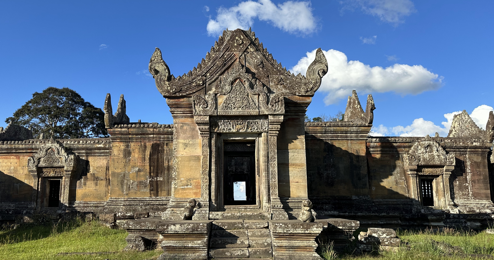


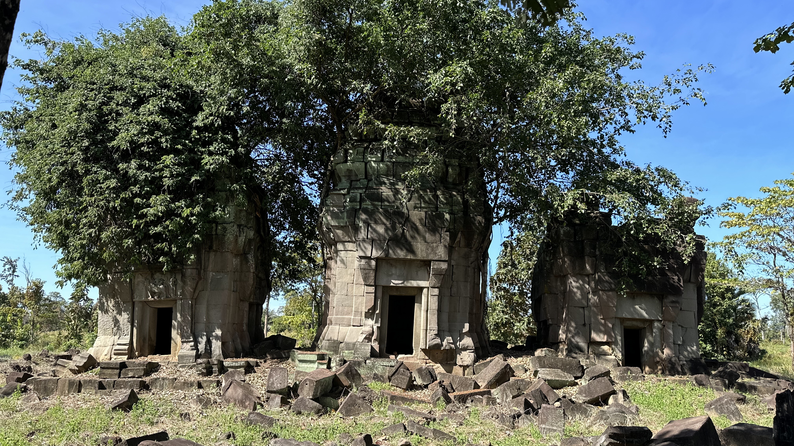
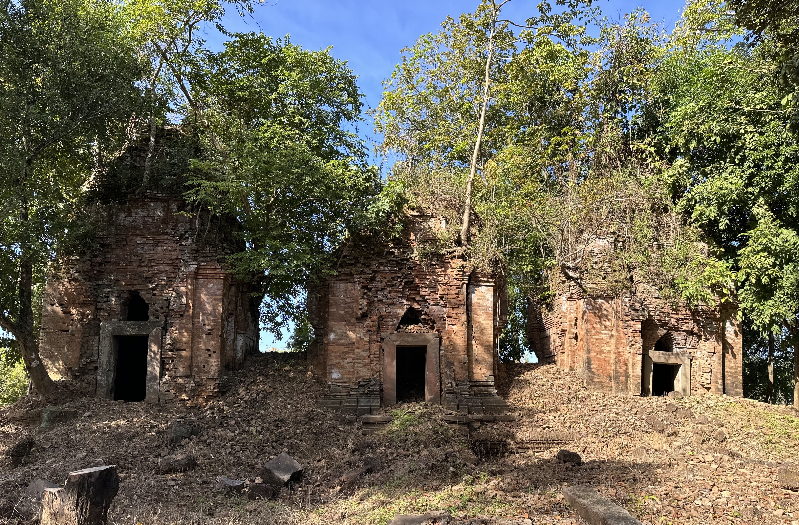
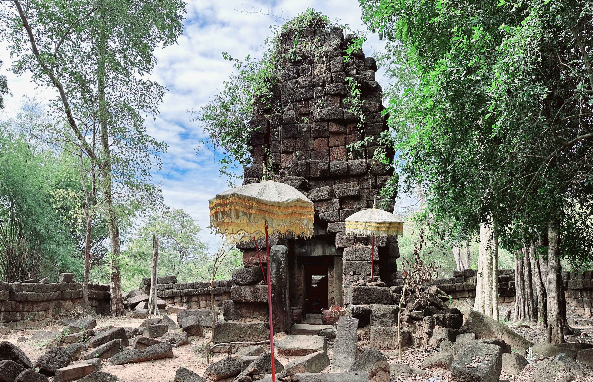
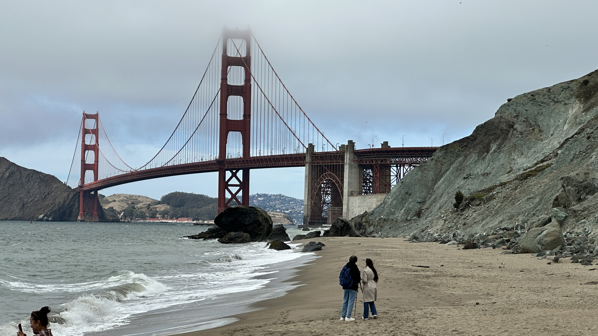
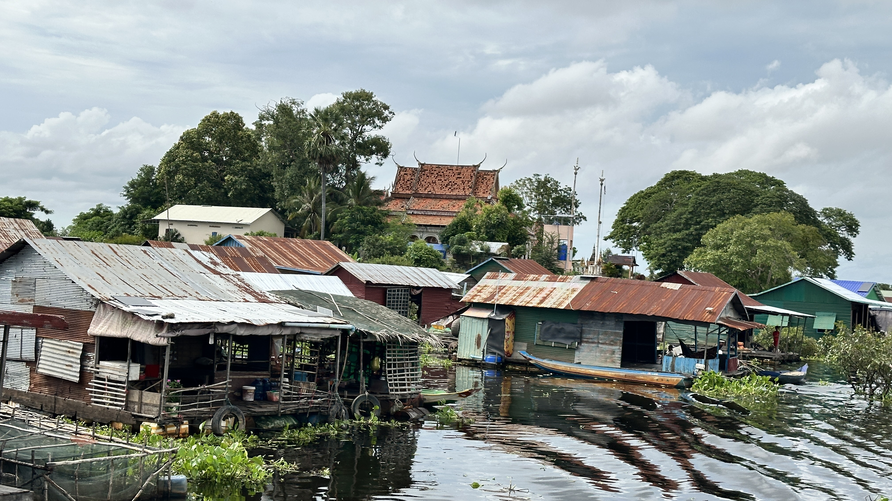
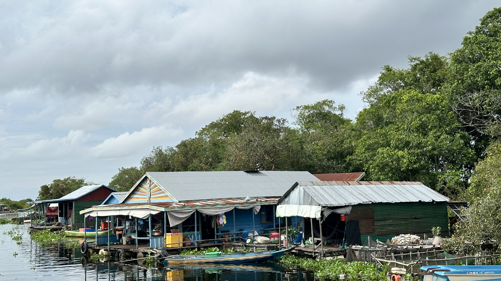







Century: 10th Century
ប្រាសាទប្រាំ គឺជាស្ថាបត្យកម្មបុរាណដ៏មានតម្លៃមួយ ដែលមានទីតាំងស្ថិតនៅក្នុងតំបន់រមណីយដ្ឋានបុរាណវិទ្យា កោះកេរ (ស្ថិតក្នុងឃុំស្រយ៉ង ស្រុកគូលែន ខេត្តព្រះវិហារ ដែលជាតំបន់ព្រំប្រទល់ជិតខេត្តសៀមរាប)។ សម័យកាលសាងសង់៖ ប្រាសាទនេះត្រូវបានសាងសង់ឡើងនៅ សតវត្សរ៍ទី១០ (ប្រហែលឆ្នាំ ៩២១ ដល់ ៩៤១ គ្រិស្តសករាជ) ក្នុងរជ្ជកាល ព្រះបាទជ័យវរ្ម័នទី៤ ពេលដែលព្រះអង្គបានទ្រង់យកក្រុងកោះកេរ (ឆោកគគីរ) ជា រាជធានីនៃអាណាចក្រខ្មែរ។ រចនាសម្ព័ន្ធ៖ ទោះបីជាឈ្មោះហៅថា «ប្រាសាទប្រាំ» ក៏ដោយ តាមការពិតស្ថាបត្យកម្មនេះមានតួប៉មចំនួន ៦ សាងសង់ពីឥដ្ឋ និងថ្មភក់ ឈរលើខឿនតែមួយ ដោយបែរមុខទៅទิសខាងកើត។ ភាពល្បីល្បាញនិងធម្មជាតិ៖ ភាពទាក់ទាញដ៏ខ្លាំងបំផុតនៃប្រាសាទនេះ គឺតួប៉មឥដ្ឋមួយត្រូវបានឫសឈើបុរាណ (ជាទូទៅគឺដើមស្រឡៅ ឬដើមឈើធំ) គ្របដណ្តប់ និងរុំព័ទ្ធយ៉ាងជិតស្និទ្ធ បង្កើតបានជារូបរាងធម្មជាតិលាយឡំប្រវត្តិសាស្ត្រយ៉ាងស្រស់ស្អាត ដែលគេច្រើនប្រៀបធៀបទៅនឹងភាពអស្ចារ្យនៃប្រាសាទតាកែវ ឬតាព្រហ្មនៅអង្គរ ប៉ុន្តែមានភាពល្វតល្វើយ និងទាក់ទាញម្យ៉ាងទៀត។
Prasat Pram is an impressive 10th-century temple located within the Koh Ker archaeological landscape (situated in Preah Vihear province, near the border of Siem Reap). Historical Background: The temple was built during the 10th century (between 921 and 941 AD) during the reign of King Jayavarman IV, when he established his capital at Koh Ker (known historically as Chok Gargyar) for the Khmer Empire. Architecture: Despite its name "Prasat Pram" (meaning "Five Temples"), the site actually consists of six brick and sandstone towers standing on a single laterite platform, facing eastward. Nature and Heritage: The most iconic feature of Prasat Pram is one of its brick sanctuary towers being entirely embraced and entwined by massive, ancient tree roots. This breathtaking fusion of ancient brickwork and thriving nature creates a mystical atmosphere reminiscent of the famous temples in Angkor, making it a favorite spot for travelers and photographers.
Located on the remote border region between Siem Reap and Preah Vihear, featuring classic architectural elements of the period.
Century: 10th Century
ប្រាសាទប្រាំ គឺជាស្ថាបត្យកម្មបុរាណសម័យអង្គរដ៏មានតម្លៃមួយ ដែលមានទីតាំងស្ថិតនៅក្នុងតំបន់រមណីយដ្ឋានបេតិកភណ្ឌពិភពលោក UNESCO កោះកេរ (ឆោកគគីរ) ប្រហែល ១ម៉ោងកន្លះ ទៅ ២ម៉ោង ធ្វើដំណើរពីខេត្តសៀមរាប។ ប្រវត្តិនិងសម័យកាល៖ ប្រាសាទនេះត្រូវបានសាងសង់ឡើងក្នុង សតវត្សរ៍ទី១០ (ចន្លោះឆ្នាំ ៩២១ ដល់ ៩៤១ គ្រិស្តសករាជ) ក្នុងរជ្ជកាល ព្រះបាទជ័យវរ្ម័នទី៤ ពេលដែលព្រះអង្គបានប្តូររាជធានីមកតំបន់កោះកេរ។ រចនាសម្ព័ន្ធស្ថាបត្យកម្ម៖ ទោះបីជាមានឈ្មោះថា «ប្រាសាទប្រាំ» ក៏ដោយ តាមការពិតសំណង់នេះមានប៉មសរុបចំនួន ៥ សាងសង់នៅលើខឿនថ្មបាយក្រៀម និងថ្មភក់តែមួយ៖ តួប៉មឥដ្ឋទាំង ៣ នៅជួរខាងក្រោយ៖ តម្រៀបជួរគ្នាពីជើងទៅត្បូង បែរមុខទៅទិសកើត ឧទ្ទិសថ្វាយព្រះសិវៈក្នុងសាសនាហិណ្ឌូ។ តួប៉មខាងមុខ៖ រួមមានសំណង់ដែលគេជឿថាជាបណ្ណាល័យ និងរោងភ្លើង សាងសង់ពីថ្មបាយក្រៀម បែរមុខទៅទិសលិច។ ភាពអស្ចារ្យនៃធម្មជាតិ៖ ចំណុចលេចធ្លោបំផុតគឺឫសឈើបុរាណធំៗបានល្មាយ និងរុំព័ទ្ធជុំវិញតួប៉មឥដ្ឋយ៉ាងស្អិតរមួត ដែលបង្កើតបានជាទេសភាពដ៏ស្រស់ស្អាតប្លែកភ្នែក រវាងស្នាដៃបុរាណនិងធម្មជាតិ ដែលទាក់ទាញភ្ញៀវទេសចរឱ្យចូលចិត្តមកទស្សនា និងថតរូបភាព។
Prasat Pram is an impressive 10th-century temple located within the UNESCO World Heritage site of Koh Ker, roughly a 1.5 to 2-hour drive from Siem Reap. History and Era: The temple was built during the 10th century (between 921 and 941 AD) during the reign of King Jayavarman IV when Koh Ker served as the capital of the Khmer Empire. Architectural Structure: Despite its name meaning "Five Temples," the site actually consists of five main towers standing on a single laterite and sandstone base: The Three Brick Towers (Back Row): Aligned from north to south, facing east, and originally dedicated to Lord Shiva. The Front Structures: Includes structures identified as a library and a firehouse built from laterite, facing west. Nature's Embrace: The most iconic feature of Prasat Pram is how massive, ancient tree roots have tightly grown over and intertwined with the brick towers. This stunning combination of ancient human architecture and thriving nature creates a breathtaking view for visitors and photographers.
A remarkable brick temple ruin located within the majestic archaeological complex of Koh Ker.
Century: 12th Century
ប្រាសាទព្រះខ័នកំពង់ស្វាយ គឺជាតំបន់រមណីយដ្ឋានប្រាសាទបុរាណដ៏ធំល្វឹងល្វើយបំផុត ដែលត្រូវបានសាងសង់ឡើងក្នុងសម័យអង្គរ។ ប្រាសាទនេះមានទីតាំងស្ថិតនៅក្នុងខេត្តព្រះវិហារ (មានចម្ងាយប្រហែល ១០០ គីឡូម៉ែត្រ ភាគខាងកើតទីក្រុងអង្គរ ខេត្តសៀមរាប)។ ប្រវត្តិសាស្ត្រ និងសម័យកាលសាងសង់៖ ប្រាសាទនេះត្រូវបានកសាងឡើងជាបន្តបន្ទាប់ចាប់ពី សតវត្សរ៍ទី៩ ដល់ទី១៣ (ក្នុងរជ្ជកាលព្រះបាទសូរ្យវរ្ម័នទី១ ព្រះបាទសូរ្យវរ្ម័នទី២ និងព្រះបាទជ័យវរ្ម័នទី៧)។ សារៈសំខាន់ផ្នែកយោធា៖ ទីកន្លែងនេះធ្លាប់ជាទីក្រុង និងជាមជ្ឈមណ្ឌលនយោបាយ ព្រមទាំងយោធាដ៏មានសារៈសំខាន់ខ្លាំង។ ក្នុងសម័យកាលដែលកងទ័ពចាមវាយលុកយកបានរាជធានីអង្គរនាចុងសតវត្សរ៍ទី១២ ព្រះបាទជ័យវរ្ម័នទី៧ ធ្លាប់បានប្រើប្រាស់ទីតាំងនេះជាមូលដ្ឋានទ័ពដ៏សំខាន់ ដើម្បីបណ្តុះបណ្តាលកងទ័ព និងរៀបចំកម្លាំងទុក្ខរៀបចំដកហូតយកទឹកដី និងរាជធានីអង្គរមកវិញ។ ស្ថាបត្យកម្មសំខាន់ៗ៖ ប្រាសាទព្រះស្ទឹង៖ មានតួប៉មមុខបួនឆ្លាក់ស្នាមញញឹមដ៏អាថ៌កំបាំងស្រដៀងនឹងប្រាសាទបាយ័ន។ ប្រាសាទព្រះដំរី៖ ជាប្រាសាទរូបពិរ៉ាមីត កសាងឡើងក្នុងទម្រង់ជាភ្នំ មានរូបសំណាកដំរីថ្មធំៗនៅតាមជ្រុង។ តំបន់ឧស្សាហកម្មដែក៖ ទីនេះស្ថិតនៅជិតភ្នំដែក ដែលជាមជ្ឈមណ្ឌលរុករក និងផលិតដែកដ៏ធំបំផុត ដើម្បីបម្រើឱ្យការសាងសង់អាណាចក្រអង្គរ។
Preah Khan Kompong Svay (also known locally as Prasat Bakan) is the largest single religious enclosure complex ever built during the Angkorian period of the Khmer Empire. It is located in Preah Vihear Province, roughly 100 kilometers east of Angkor Wat. History and Timeline: The vast temple-city was constructed and expanded between the 9th and 13th centuries under notable kings such as Suryavarman I, Suryavarman II, and Jayavarman VII. Military and Strategic Significance: The site served as a major political and military center. During the late 12th century, when Angkor was occupied by the Chams, future King Jayavarman VII utilized this remote and heavily fortified jungle stronghold as a strategic military base to train troops, reorganize his army, and eventually recapture Angkor. Key Architectural Features: Prasat Preah Stung: A temple featuring iconic four-faced towers mirroring the Bayon style. Preah Damrei Temple: A 15-meter-high pyramid structure guarded by large stone elephant statues at its corners. Industrial Hub: Located near Phnom Dek (the iron mountain), it served as a vital economic center for iron smelting to support the construction of the empire.
One of the largest provincial temple complexes of the Khmer Empire, hidden deep within forested lands.

Century: 10th-11th Century
ប្រាសាទពងទឹក គឺជាប្រាសាទបុរាណសម័យអង្គរដ៏គួរឱ្យទាក់ទាញ និងលាក់ខ្លួនយ៉ាងស្ងៀមស្ងាត់ក្នុងព្រៃធម្មជាតិ ដែលមានទីតាំងស្ថិតនៅក្នុងខេត្តព្រះវិហារ (ក្បែរតំបន់ស្រយ៉ង ស្រុកគូលែន និងស្ថិតក្នុងតំបន់ជុំវិញទីក្រុងបុរាណកោះកេរ)។ ប្រវត្តិនិងសម័យកាលសាងសង់៖ ប្រាសាទនេះត្រូវបានកសាងឡើងក្នុងអំឡុង សតវត្សរ៍ទី១១ ដល់ទី១២ (ស្ថិតក្នុងសម័យកាលរចនាបថបាពួន ដល់រចនាបថអង្គរវត្ត) ដែលជាសម័យកាលកសាងស្ថាបត្យកម្មថ្មភក់ដ៏វិចិត្រ។ រចនាសម្ព័ន្ធស្ថាបត្យកម្ម៖ មានតួប៉មសាងសង់ពីថ្មភក់ចំនួន ៣ តម្រៀបជួរគ្នាមុខបែរទៅទិសកើត ដោយឈរលើខឿនថ្មបាយក្រៀមតែមួយ។ ទោះបីជាមានការទ្រុឌទ្រោមខ្លះតាមអាយុកាល និងមានដើមឈើធំៗដុះព័ទ្ធជុំវិញក៏ដោយ ប៉ុន្តែប្រាសាទនេះនៅសេសសល់នូវចម្លាក់ផ្ដែ និងស៊ុមទ្វារដ៏មានតម្លៃ ដែលបង្ហាញពីសិល្បៈខ្មែរយ៉ាងប្រណីត។ ភាពលាក់ខ្លួន៖ ដោយសារទីតាំងនៅដាច់ស្រយាល និងត្រូវធ្វើដំណើរតាមផ្លូវលំក្នុងព្រៃ ទើបប្រាសាទពងទឹកក្លាយជា «ប្រាសាទបុរាណដែលលាក់ខ្លួន» ដ៏មានតម្លៃសម្រាប់អ្នកចូលចិត្តការស្វែងរក និងរុករកប្រាង្គប្រាសាទបុរាណស្ងប់ស្ងាត់។
Pong Toek Temple is an enchanting and hidden ancient Angkorian jungle temple located in Preah Vihear Province (near the Srayong area in Kulen district, close to the broader Koh Ker archaeological landscape). History and Era: The temple was constructed between the 11th and 12th centuries (spanning the Baphuon to Angkor Wat architectural styles), a period renowned for intricate sandstone temple-building craftsmanship. Architectural Structure: The complex consists of three sandstone sanctuary towers aligned in a row facing east, standing upon a single laterite platform. Despite weathering and the encroachment of surrounding jungle trees, the site still preserves remarkable lintels, door frames, and carved architectural details showcasing classic Khmer artistry. The "Hidden Ruin" Experience: Due to its remote location and rugged forest access paths, Pong Toek remains a peaceful and secluded "hidden ruin" that captivates travelers and explorers seeking out-of-the-way ancient heritage sites.An ancient sanctuary site reflecting early architectural traditions.

Century: 10th-11th Century
ប្រវត្តិ និងទីតាំងាប្រាសាទពោធិ៍ដំណាក់ គឺជាប្រាសាទបុរាណសម័យអង្គរដ៏ស្ងប់ស្ងាត់មួយ ដែលមានទីតាំងស្ថិតនៅក្នុងតំបន់ដាច់ស្រយាល ក្នុងភូមិក្ដាក ឃុំភ្នំត្បែងបី ស្រុកគូលែន ខេត្តព្រះវិហារ និងស្ថិតក្នុងបណ្តុំតំបន់ប្រវត្តិសាស្ត្រជុំវិញឧទ្យានបុរាណវិទ្យាកោះកេរ។ ឆ្នាំ និងសតវត្សរ៍សាងសង់៖ ត្រូវបានកសាងឡើងក្នុងអំឡុង សតវត្សរ៍ទី១០ ដល់ទី១២ ក្នុងសម័យអង្គរ ដែលមានអាយុកាលប្រហាក់ប្រហែលនឹងការអភិវឌ្ឍតំបន់ជុំវិញទីក្រុងបុរាណកោះកេរ។ បរិបទ និងសារៈសំខាន់៖ ប្រាសាទនេះស្ថិតនៅជិតតំបន់វត្តអារាមក្នុងមូលដ្ឋាន និងនៅជិតតំបន់ប្រាសាទបុរាណពាក់ព័ន្ធផ្សេងទៀត ដូចជាប្រាសាទដាក (Prasat Kdak) ដែលស្ថិតនៅភាគខាងជើងបន្តិច។ ទោះបីជាមានខ្នាតតូចក៏ដោយ ប៉ុន្តែទីនេះឆ្លុះបញ្ចាំងពីបណ្តាញតាំងទីលំនៅ និងរចនាសម្ព័ន្ធសាសនាជនបទសម័យអង្គរ ដែលបម្រើឱ្យសហគមន៍ ឬអ្នកដំណើរក្នុងសម័យកាលនោះ។
History and Location: Po Damnak Temple is a quiet, remote ancient Angkorian temple site located near Kdak village in Phnum Tbaeng Pir commune, Kulen district, Preah Vihear province, nestled within the historical landscape surrounding the broader Koh Ker region. Construction Period / Century: Built between the 10th and 12th centuries during the Angkorian period, contemporaneous with the regional expansion around Koh Ker. Context and Significance: The site is situated near a local modern pagoda and close to other ancient structures such as Prasat Kdak just to the north. While smaller in scale, Po Damnak reflects the widespread rural settlement and religious network of the Angkorian era, likely functioning as a local sanctuary or community shrine outside the primary capital centers.
A historical site surrounded by nature, holding rich archaeological significance.

Century: 9th-10th Century
ប្រាសាទត្រពាំងប្រាសាទ គឺជាតំបន់រមណីយដ្ឋានប្រាសាទបុរាណសម័យអង្គរដ៏សំខាន់មួយ ដែលមានទីតាំងស្ថិតនៅក្នុងស្រុកត្រពាំងប្រាសាទ ខេត្តឧត្តរមានជ័យ។ ប្ររវត្តិ និងសម័យកាលសាងសង់៖ ប្រាសាទនេះត្រូវបានកសាងឡើងក្នុងអំឡុង សតវត្សរ៍ទី១១ ដល់ទី១២ (ស្ថិតក្នុងសម័យកាលរចនាបថបាពួន ឬដើមសម័យអង្គរវត្ត) ដែលជាសម័យកាលនៃការរីកចម្រើនខ្លាំងលើការសាងសង់សំណង់ស្ថាបត្យកម្មថ្ម និងឥដ្ឋ។ រចនាសម្ព័ន្ធស្ថាបត្យកម្ម៖ មានតួប៉មឥដ្ឋចំនួន ៣ តម្រៀបជួរគ្នាមុខបែរទៅទិសកើត ដោយសាងសង់នៅលើខឿនថ្មបាយក្រៀមតែមួយ។ មានព័ទ្ធជុំវិញដោយកំផែងថ្មបាយក្រៀម និងមានរន្ធទ្វារចូល (គោបុរាណ) ព្រមទាំងមានត្រពាំងទឹកបុរាណធំមួយនៅខាងមុខប្រាសាទ ដែលជាទម្រង់គំរូនៃការរៀបចំប្លង់ប្រាសាទខ្មែរបុរាណ។ សារៈសំខាន់៖ទីតាំងនេះធ្លាប់ជាមជ្ឈមណ្ឌលសហគមន៍ និងជាស្ថានីយ៍ឈប់សម្រាកដ៏សំខាន់សម្រាប់ផ្លូវគមនាគមន៍បុរាណដែលតភ្ជាប់ពីតំបន់ផ្សេងៗក្នុងអាណាចក្រខ្មែរ។
Prasat Trapeang Prasat is an important ancient Angkorian temple site located in Trapeang Prasat District, Oddar Meanchey Province. History and Century: The temple was constructed between the 11th and 12th centuries (during the Baphuon to early Angkor Wat architectural styles), a period characterized by vibrant brick and stone temple-building craftsmanship across the Khmer Empire. Architectural Structure: The complex consists of three brick sanctuary towers aligned in a row facing east, standing upon a shared laterite base platform. It is enclosed by laterite boundary walls and features entry gopuras, accompanied by a large ancient reservoir (trapeang) in front of the complex, reflecting classic traditional Khmer temple layout planning. Significance: Historically, the site served as an important local religious center and likely functioned as a strategic waystation along the ancient roads connecting various regions of the Khmer Empire.
Ancient structured brick and stone remains dating back to the earlier periods of Khmer development.
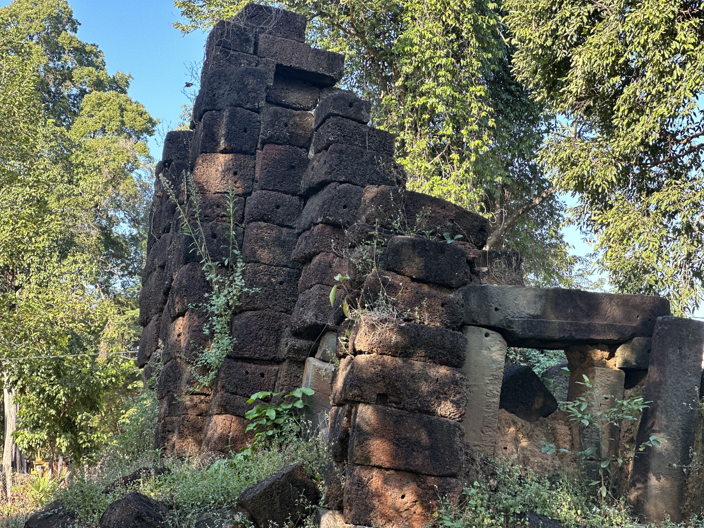
Century: 12th Century (Hospital / Rest House)
ទីតាំង និងទំនាក់ទំនង៖ប្រាសាទត្រពាំងប្រាសាទតូច ស្ថិតនៅមានចម្ងាយប្រហែល ២០០ម៉ែត្រ ភាគខាងជើងនៃ ប្រាសាទត្រពាំងប្រាសាទធំ ក្នុងភូមិត្រពាំងដាក ឃុំទំពោកដាក ស្រុកត្រពាំងប្រាសាទ ខេត្តឧត្តរមានជ័យ។ ឆ្នាំនិងសតវត្សរ៍សាងសង់៖ ត្រូវបានកសាងឡើងក្នុងអំឡុង សតវត្សរ៍ទី១១ ដល់ទី១២ (សម័យអង្គរ) ដែលមានសម័យកាលប្រហាក់ប្រហែលគ្នាទៅនឹងប្រាសាទមេនៅក្បែរនោះ។ រចនាសម្ព័ន្ធស្ថាបត្យកម្ម៖ សំណង់នេះមានកំផែងព័ទ្ធជុំវិញធ្វើពីថ្មបាយក្រៀម និងមានខឿនព្រះវិហារ ឬគោបុរាណ (ផ្លូវចូល) នៅខាងកើត។ នៅខាងក្នុងមានសំណង់តួប៉ម ឬអគារតូចធ្វើពីថ្មបាយក្រៀម និងមានអគារបណ្ណាល័យតូចមួយ ដែលមានរចនាសម្ព័ន្ធស្រដៀងទៅនឹងបណ្តុំសំណង់ឧបទ្ទវហេតុ ឬមន្ទីរពេទ្យបុរាណ ប៉ុន្តែមិនមានសិលាចារឹកបញ្ជាក់ច្បាស់លាស់ឡើយ។
Location and Context: Trapeang Prasat Toch (Little Trapeang Prasat Temple) is located about 200 meters north of the main Trapeang Prasat temple complex in Trapeang Dach Village, Tomnop Dach Commune, Trapeang Prasat District, Oddar Meanchey Province. Construction Period / Century: Built between the 11th and 12th centuries during the Angkorian period, contemporaneous with the main nearby sanctuary. Architectural Structure: The site features the remains of an outer laterite enclosure wall with an eastern entrance pavilion (gopura). Inside, it houses a laterite central sanctuary tower and a subsidiary "library" building, showing architectural layouts reminiscent of regional chapels or ancient waystations, though no foundation stele has been discovered to formally designate its precise administrative function.Believed to have served as an ancient hospital or traveler's rest house along historic routes.

Century: 12th Century (Hospital / Rest House)
ទីតាំងជាក់ស្តែង៖ ប្រាសាទតូច នេះស្ថិតនៅតាមបណ្តោយ ឬក្បែរផ្លូវជាតិលេខ ៦២ ក្នុងភូមិសាស្ត្រខេត្តព្រះវិហារ ដែលមានចម្ងាយជិតគួរសមពីតំបន់ជើងភ្នំ និងច្រកឡើងទៅកាន់ ប្រាសាទព្រះវិហារ។ កាលបរិច្ឆេទសាងសង់ (សតវត្សរ៍ទី១៣)៖ សំណង់ ឬប្រាសាទតូចៗជាច្រើននៅតាមបណ្តោយផ្លូវគមនាគមន៍បុរាណឆ្ពោះទៅកាន់ប្រាសាទព្រះវិហារ ភាគច្រើនត្រូវបានកសាងឡើង ឬពង្រីកបន្ថែមក្នុងអំឡុង សតវត្សរ៍ទី១៣ (ជាពិសេសក្នុងរជ្ជកាលព្រះបាទជ័យវរ្ម័នទី៧) ដែលជាសម័យកាលនៃការសាងសង់មន្ទីរពេទ្យព្រះសង្ឃ (Dharmasala) និងស្ថានីយ៍សម្រាកតាមដងផ្លូវ ដើម្បីបម្រើឱ្យអ្នកដំណើរ និងកងទ័ពក្នុងអាណាចក្រ។
Corrected Location: The Prasat Toch shown near National Highway 62 (close to Koh Roh Ko primary school) is actually situated in Preah Vihear Province, forming part of the historical corridor leading up toward the Preah Vihear Temple region. 13th Century Dating: Many of these smaller roadside sanctuaries and rest-station structures along the ancient routes leading to major pilgrimage sites like Preah Vihear date to the 13th century (notably under King Jayavarman VII's extensive infrastructure campaign, which included rest houses and chapels along vital imperial roads).
Another classic example of Jayavarman VII's social structure architecture (Chapel/Hospital).
Century: 9th to the 12th
ប្រវត្តិសាងសង់ និងរជ្ជកាល៖ ប្រាសាទព្រះវិហារមិនមែនកសាងឡើងក្នុងពេលតែមួយនោះទេ ប៉ុន្តែត្រូវបានផ្តួចផ្តើម និងសាងសង់ថែមជាបន្តបន្ទាប់ដោយព្រះមហាក្សត្រខ្មែរបុរាណหลายព្រះអង្គ ក្នុងចន្លោះ សតវត្សរ៍ទី៩ ដល់ទី១២ (ចាប់ផ្តើមពីសម័យព្រះបាទយសវរ្ម័នទី១ និងបន្តពង្រីកដោយព្រះបាទសូរ្យវរ្ម័នទី១ និងព្រះបាទសូរ្យវរ្ម័នទី២)។ គោលបំណង និងការបូជា៖ ប្រាសាទនេះត្រូវបានសាងសង់ឡើងដើម្បីឧទ្ទិសថ្វាយដល់ព្រះសិវៈ ក្នុងศาสនាយោគ/ព្រហ្មញ្ញសាសនា ដោយយកទ្រង់ទ្រាយតាមធម្មជាតិនៃភ្នំដើម្បីតំណាងឱ្យភ្នំកៃលាស (Kailash) ដែលជាលំនៅដ្ឋានរបស់ព្រះសិវៈ។ ស្ថាបត្យកម្ម៖ ចំណុចពិសេសរបស់ប្រាសាទព្រះវិហារគឺការសាងសង់បណ្ដោយតាមអ័ក្សត្រង់ពីជើងទៅត្បូង ឡើងតាមខ្នងភ្នំដែលមានកម្ពស់ខុសគ្នាយ៉ាងគួរសម ដោយមានគោបុរាណ (ខ្លោងទ្វារ) ធំៗចំនួនប្រាំរៀបចំឡើងជាលំដាប់ ឆ្លុះបញ្ចាំងពីជំនឿ និងភាពប៉ិនប្រសប់កម្រិតខ្ពស់របស់ជាងបុរាណខ្មែរ។ បេតិកភណ្ឌពិភពលោក៖ ប្រាសាទនេះត្រូវបានអង្គការយូណេស្កូ (UNESCO) ដាក់បញ្ចូលជាបេតិកភណ្ឌពិភពលោកនៅថ្ងៃទី៧ ខែកក្កដា ឆ្នាំ២០០៨។
History and Construction: Preah Vihear Temple was built over several centuries, spanning from the 9th to the 12th centuries during the Angkorian period. Construction began during the reign of King Yasovarman I and was continually expanded by subsequent monarchs, notably Suryavarman I and Suryavarman II. Religious Significance: Dedicated primarily to the Hindu god Shiva, the temple was designed to represent Mount Kailash, the sacred cosmic abode of Shiva, majestically integrated into the natural cliffside landscape of the Dangrek Mountains. Architecture Layout: Unlike conventional flat-land temples, Preah Vihear is uniquely laid out along a long north-south linear axis stretching up the mountain slope. It features a stunning sequence of monumental staircases, causeways, and five impressive gopuras (entrance pavilions) leading progressively to the central sanctuary. UNESCO World Heritage: Due to its exceptional architecture and monumental landscape, Preah Vihear was officially inscribed as a UNESCO World Heritage Site on July 7, 2008.
An architectural masterpiece perched on a natural cliff of the Dângrêk Mountains.
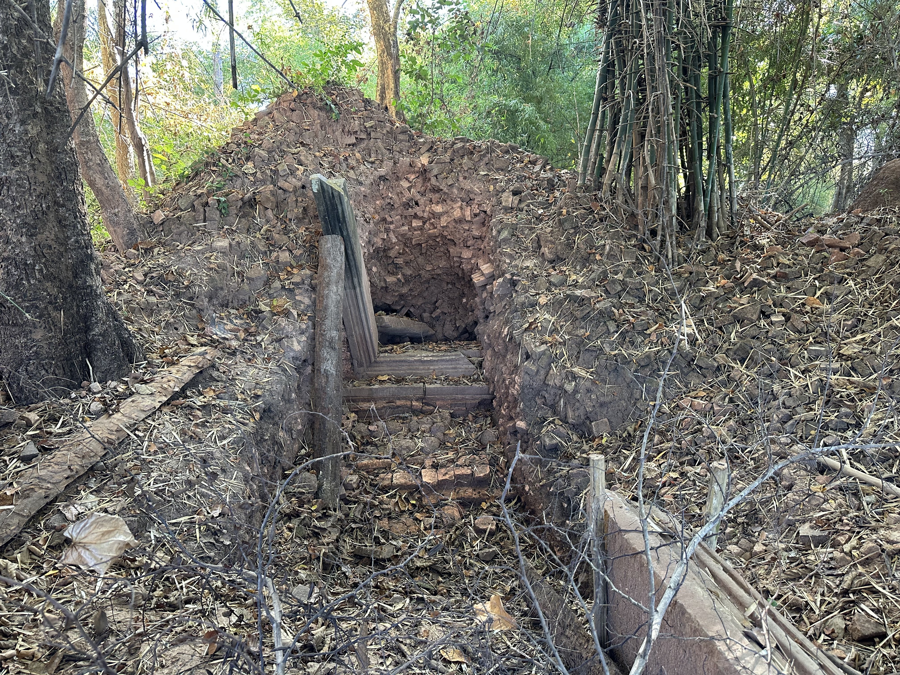
Century: 11th Century
ទីតាំង និងឈ្មោះ៖ ប្រាសាទាសាទចាអះ ស្ថិតនៅក្នុងភូមិចាអះ ឃុំទឹកក្រហម ស្រុកជាំក្សាន្ត ខេត្តព្រះវិហារ។ ប្រាសាទនេះក៏ត្រូវបានគេស្គាល់ក្នុងឯកសារបុរាណវិទ្យាខ្លះថាជា ប្រាសាទត្រពាំងថ្នល់ ឬ ថ្នល់បែក ផងដែរ។ រចនាសម្ព័ន្ធស្ថាបត្យកម្ម៖ សំណង់ដើមសាងសង់ឡើងដោយឥដ្ឋ ដែលមានតួប៉មប្រាសាទនៅចំកណ្ដាល។ មានអគាររង ឬ «បណ្ណាល័យ» ចំនួនពីរ សាងសង់អមសងខាងមុខប្រាសាទ និងមានកំផែងព័ទ្ធជុំវិញជាលក្ខណៈគ្រឹះបុរាណ។ ប្រវត្តិ និងការស្រាវជ្រាវ (សតវត្សរ៍ទី១១)៖ ទីតាំងនេះត្រូវបានកត់ត្រាក្នុងបញ្ជីសារពើភណ្ឌបេតិកភណ្ឌ និងការស្ទង់មតិរបស់បារាំងតាំងពីដើមសតវត្សរ៍ទី២០ (ដោយអ្នកជំនាញដូចជា Lunet de Lajonquière និង Henri Parmentier) ដែលបង្ហាញថាវាជាបូជនីយដ្ឋានកសាងឡើងក្នុងសម័យអង្គរ (សតវត្សរ៍ទី១២) ដើម្បីបម្រើឱ្យសហគមន៍ និងអ្នកដំណើរតាមដងផ្លូវបុរាណក្នុងតំបន់ភូមិសាស្ត្រខេត្តព្រះវិហារ៕
Location and Naming: Cha-eh Temple is located in Cha-eh Village, Tuek Kraham Commune, Choam Khsant District, Preah Vihear Province. It is also historically referenced in early archaeological records as Prasat Trapeang Thnal or Thnal Bek. Architectural Structure: The original structure is built of brick with a central sanctuary tower. It features two subsidiary "library" buildings flanking the front of the sanctuary, enclosed by an ancient foundation boundary wall. History and Research (11th Century): The site was documented in heritage inventories and French explorations since the early 20th century (by experts such as Lunet de Lajonquière and Henri Parmentier), indicating that it is an Angkorian-era sanctuary (11th century) built to serve local communities and travelers along ancient routes in the Preah Vihear region.
An old jungle ruin showcasing traditional 11th-century craftsmanship.
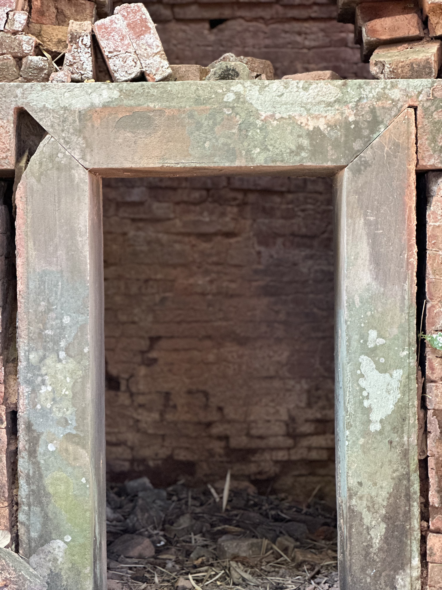
Century: 10th Century
ទីតាំង និងប្រវត្តិ៖ ប្រាសាទសួរម៉ាប់ គឺជាបុរាណដ្ឋានប្រាសាទខ្មែរដ៏ចំណាស់មួយ ស្ថិតនៅតំបន់ភាគខាងជើងប្រទេសកម្ពុជា (ជាទូទៅត្រូវបានគេស្គាល់ថាស្ថិតក្នុងភូមិសាស្ត្រខេត្តព្រះវិហារ)។ បើទោះបីជាប្រាសាទនេះមិនសូវល្បីល្បាញខ្លាំង ឬមានសិលាចារឹកធំដុំដូចប្រាសាទអង្គរវត្ត ឬប្រាសាទព្រះវិហារក៏ដោយ ប៉ុន្តែវាមានប្រវត្តិ និងលក្ខណៈរចនាសម្ព័ន្ធស្ថាបត្យកម្មបុរាណដាច់ដោយឡែកពីគេ៖ ប្ររវត្តិសាស្ត្រ និងការកសាង៖ ប្រាសាទនេះត្រូវបានកសាងឡើងក្នុងសម័យអង្គរ ដែលឆ្លុះបញ្ចាំងពីការពង្រីកឥទ្ធិពល និងការសាងសង់សាសនដា្ឋននៅតាមតំបន់ខេត្តឆ្ងាយៗពីបុរីធំ។ អ្នកជំនាញបុរាណវិទ្យាបានកត់សម្គាល់ថា វាជាសំណង់ស្ថាបត្យកម្មធ្វើអំពីឥដ្ឋ ដែលជាបច្ចេកទេសសាងសង់ដ៏ពេញនិយមក្នុងសម័យកាលមុន និងដើមសម័យអង្គរ។ ប្លង់ និងស្ថាបត្យកម្ម៖ ប្រាសាទសួរម៉ាប់មានតួប៉មឥដ្ឋចំនួន ៣ ឈរតម្រៀបគ្នាតាមអ័ក្សជើង-ត្បូង និងបែរមុខទៅទิសខាងកើត ព្រមទាំងមានបណ្ណាល័យឥដ្ឋតូចមួយនៅទิសអាគ្នេយ៍។ សារៈសំខាន់៖ ប្រាសាទនេះគឺជាភស្តុតាងនៃស្ថាបត្យកម្មកសាងព្រះរាជដំណាក់ ឬទេវស្ថានក្នុងតំបន់ជនបទនៃអាណាចក្រខ្មែរបុរាណ ដែលបច្ចុប្បន្ននៅសេសសល់ជារូបរាងបុរាណសម្រាប់អ្នកស្រាវជ្រាវប្រវត្តិសាស្ត្រ។
Prasat Suor Mab is an ancient Khmer temple site located in northern Cambodia (specifically within the Preah Vihear region). Although it is less prominent and lacks the massive epigraphic archives of major tourist centers like Angkor Wat, it holds a distinct place in regional Khmer architecture and history: History and Construction: The temple dates back to the Angkorian era, reflecting the empire's extensive reach in constructing religious and provincial sanctuaries across remote territories. Archaeologists identify its use of brick masonry as a hallmark characteristic of regional temple-building traditions. Layout and Architecture: The complex consists of three standing brick towers aligned neatly along a north-south axis, all facing toward the east, accompanied by a small brick library structure positioned to the southeast. Significance: Prasat Suor Mab serves as a valuable archaeological marker of ancient Khmer provincial temple planning, offering insight into the architectural dispersion and religious life outside the core capital.
An ancient sanctuary structure hidden in historical landscapes.
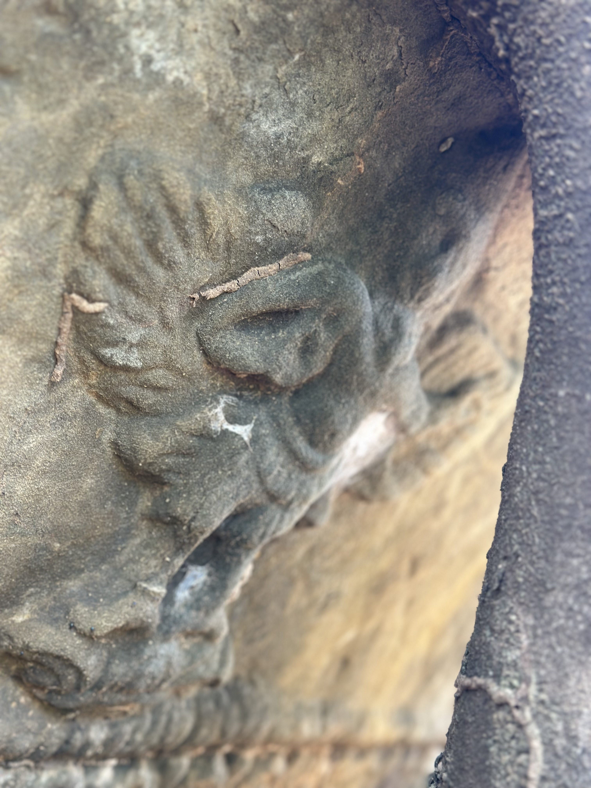
Century: 10th Century
ទីតាំង និងប្រវត្តិ៖ ប្រាសាទគុកប្រុស ស្ថិតនៅក្នុងខេត្តព្រះវិហារ (ជាពិសេសនៅក្នុងតំបន់ជាំក្សាន្ត ដែលច្រើនតែស្ថិតនៅជិតប្រាសាទបុរាណដទៃទៀតដូចជា ប្រាសាទគុកស្រី និងតំបន់ជុំវិញប្រាសាទនាងបូស)។ ប្រាសាទនេះក៏ត្រូវបានគេផ្សារភ្ជាប់ទៅនឹងរឿងព្រេងតំបន់ផងដែរ។ កាលបរិច្ឆេទសាងសង់៖ ប្រាសាទនេះត្រូវបានកសាងឡើងក្នុងអំឡុងចុងសម័យអង្គរ (ប្រហែលសតវត្សរ៍ទី១២) ឆ្លុះបញ្ចាំងពីការរីកសាយភាយនៃសំណង់ស្ថាបត្យកម្មទូទាំងព្រះរាជាណាចក្រ។ ស្ថាបត្យកម្ម និងសារៈសំខាន់៖ ទោះបីជួបប្រទះការបាក់បែកតាមអាយុកាលក៏ដោយ ប្រាសាទនេះនៅតែរក្សាបាននូវទម្រង់សំណង់ដែលជាតម្រុយប្រវត្តិសាស្ត្រដ៏មានតម្លៃសម្រាប់សិក្សាពីជីវភាព និងជំនឿនៅតាមខេត្តឆ្ងាយៗ។
Location & History: Prasat Kuk Pros is located in Preah Vihear Province (specifically within the Choam Khsant area, often grouped geographically near other remote sites like Prasat Kuk Srei and the surrounding areas of Prasat Neak Buos). The site is also deeply tied in local folklore to regional legends. Construction Date: The temple dates back to the late Angkorian period (circa the 12th century), reflecting the expansion of architecture across the kingdom. Architecture & Significance: Despite weathering and partial collapse, it features traditional elements serving as an important marker for understanding provincial religious architecture and regional folklore.
Part of twin style structures traditionally tied to local folklore.
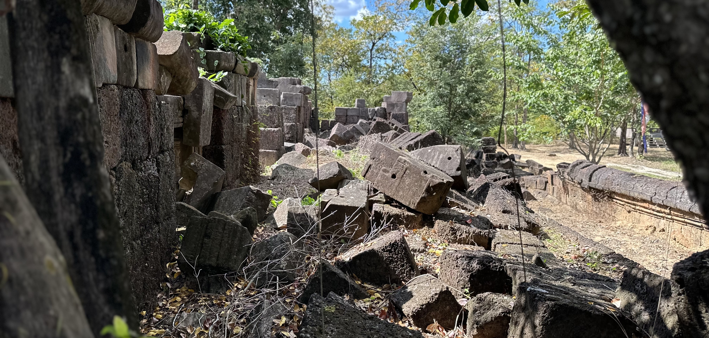
Century: 10th Century
ទីតាំង និងប្រវត្តិ៖ ប្រាសាទគុកស្រី ស្ថិតនៅក្បែរជ្រុងខាងជើងនៃកសិណទឹកបុរាណ និងនៅភាគខាងត្បូងនៃប្រាសាទព្រះបួស ក្នុងតំបន់ខេត្តព្រះវិហារ។ ប្រាសាទនេះស្ថិតនៅលើគន្លងផ្លូវរាជបុរាណ (Ancient Royal Road) និងជាបុរាណដ្ឋានដែលមានរចនាសម្ព័ន្ធប្លែកពីប្រាសាទដទៃទៀត។ ស្ថាបត្យកម្ម និងប្លង់៖ ខុសប្លែកពីប្រាសាទតំបន់ស្រដៀងគ្នា ប្រាសាទគុកស្រីមានរចនាសម្ព័ន្ធរាងជាអក្សរ «U» (U-shaped building) ផ្សំឡើងដោយជញ្ជាំងថ្មបាយក្រៀម និងគ្រឹះថ្មភក់ ព្រមទាំងមានផ្នែកមុខរបៀបជាសាលវែង (Peristyle) ដែលអ្នកជំនាញបុរាណវិទ្យាចាត់ទុកថាជាសំណង់ប្រភេទ «ព្រះរាជដំណាក់ ឬទីតាំងរដ្ឋបាល»។ ព័ទ្ធជុំវិញដោយថ្មបាយក្រៀមដែលមានរចនាបទខ្លោងទ្វារខាងកើត និងខាងលិច។ សារៈសំខាន់៖ ប្រាសាទនេះគឺជាតឹកតាងដ៏សំខាន់នៃបណ្តាញស្ថាបត្យកម្មតាមដងផ្លូវរាជការបុរាណ ដែលតភ្ជាប់ចក្រភពខ្មែរពីសម័យមុន និងក្នុងសម័យអង្គរ។
Location & History: Prasat Kuk Srei is located just south of the larger Preah Vihear temple complex of Neak Buos, positioned along the historical Ancient Royal Road network. Architecture & Layout: Unlike standard single-tower shrines, Prasat Kuk Srei features an unusual layout consisting of a U-shaped sandstone-and-laterite structure fronted by a long columned gallery hall. Archaeologists and researchers classify this unique configuration as a type of ancient "palace" or administrative waystation. It is enclosed by a laterite wall featuring entrances on both the east and west sides. Significance: The site serves as a fascinating architectural marker of the infrastructure, royal roadways, and specialized regional administrative buildings utilized during the height of the Khmer Empire.
Complementary historical structure associated with the regional temple network.

Century: 10th-11th Century
ទីតាំង និងប្រវត្តិ៖ ប្រាសាទនាគបួស (ដែលពេលខ្លះត្រូវបានគេស្គាល់ថាជាប្រាសាទ «ខ្សឹប ឬរូងខ្លា») គឺជាបុរាណដ្ឋានដ៏ធំ និងមានសារៈសំខាន់ខ្លាំង ស្ថិតនៅជើងភ្នំដងរែក ក្នុងខេត្តព្រះវិហារ។ ប្រាសាទនេះមានប្រវត្តិសាស្ត្រវែងឆ្ងាយ តាំងពីសម័យមុនអង្គរ និងត្រូវបានកែលម្អបន្ថែមជាបន្តបន្ទាប់រហូតដល់ចុងសម័យអង្គរ។កាលបរិច្ឆេទសាងសង់៖ ការសាងសង់បានចាប់ផ្តើមដំបូងនៅ ចុងសតវត្សរ៍ទី៧ (សម័យចេនឡា) ហើយត្រូវបានពង្រីក និងកសាងបន្ថែមក្នុងសតវត្សរ៍ទី៩ ទី១០ ទី១១ និងចុងក្រោយក្នុងរជ្ជកាល ព្រះបាទជ័យវរ្ម័នទី៧ (សតវត្សរ៍ទី១២-១៣) ដែលបានសាងសង់មន្ទីរពេទ្យសាសនា ឬអាគាររដ្ឋបាលបន្ថែម។ស្ថាបត្យកម្ម និងប្លង់៖ ប្រាសាទនេះមានភាពលេចធ្លោដោយសារការប្រើប្រាស់សម្ភារៈចម្រុះរួមមាន ឥដ្ឋ ថ្មភក់ និងថ្មបាយក្រៀម។ ប៉មប្រាសាទកណ្តាលមានទំហំធំមិនធម្មតា ដែលផ្នែកខាងក្រោមធ្វើពីថ្មបាយក្រៀម និងផ្នែកខាងលើធ្វើពីឥដ្ឋ ព្រមទាំងមានរចនាសម្ព័ន្ធខ្លោងទ្វារ (Gopura) ថែវ និងអាគាររងជាច្រើនទៀតព័ទ្ធជុំវិញក្នុងសម្ព័ន្ធតែមួយ។ សារៈសំខាន់៖ ក្នុងនាមជាមជ្ឈមណ្ឌលសាសនា និងជាទីតាំងនៅលើផ្លូវរាជបុរាណ ប្រាសាទនាគបួសគឺជាតំណាងឱ្យការវិវត្តន៍ស្ថាបត្យកម្មខ្មែរឆ្លងកាត់ច្រើនសម័យកាលដ៏មានតម្លៃបំផុត៕
Location & History: Prasat Neak Buos (sometimes associated locally with the "Tiger Cave" area) is a massive and historically significant temple complex located near the foot of the Dângrêk Mountains in Preah Vihear Province. It has one of the longest continuous histories of use among regional northern sites, spanning multiple eras from pre-Angkorian times down to the late Angkorian period. Construction Timeline: Initial construction dates back to the late 7th century (Chenla period), with major expansions and structural additions continuing through the 9th, 10th, and 11th centuries, concluding with a chapel/hospital-related addition built under King Jayavarman VII in the 12th–13th centuries. Architecture & Layout: The complex is uniquely constructed using a hybrid of brick, sandstone, and laterite materials. The grand central sanctuary features a distinct layout where the lower tiers are built of laterite and the upper sections are built of brick. It includes large enclosure walls, weathered entrance gopuras, elongated subsidiary buildings, and exquisite lintels depicting Hindu mythological motifs (such as Indra on Airavata and friezes of ascetics). Significance: Prasat Neak Buos serves as a vital archaeological key for understanding how regional Khmer religious centers evolved and adapted architecturally across centuries of empire building.
A fascinating mountaintop or remote forest sanctuary with unique layouts.
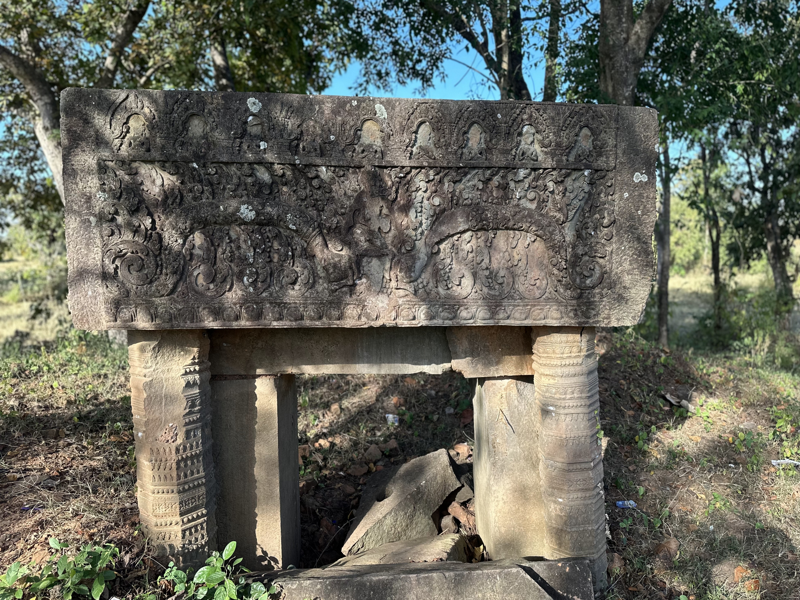
Century: 11th Century
ទីតាំង និងប្រវត្តិ៖ ប្រាសាទសីមា ស្ថិតនៅតំបន់ភាគខាងជើងក្នុងខេត្តព្រះវិហារ (ក្នុងតំបន់ជុំវិញឃុំជាំក្សាន្ត) ដែលស្ថិតនៅមិនឆ្ងាយគ្នាទៅនឹងប្រាសាទបុរាណដទៃទៀតដូចជា ប្រាសាទសួរម៉ាប់ និងប្រាសាទនាគបួស。 ស្ថាបត្យកម្ម និងសំណង់៖ ជាទូទៅ ប្រាសាទនេះត្រូវបានកសាងឡើងជាទេវស្ថាន ឬទីតាំងសាសនាស្របតាមទម្រង់ស្ថាបត្យកម្មសម័យអង្គរ ដោយប្រើប្រាស់ឥដ្ឋ និងថ្មភក់ជាវត្ថុធាតុដើមចម្បង។ ទោះបីជាបច្ចុប្បន្ននៅសេសសល់ជារូបរាងបាក់បែកក៏ដោយ ក៏វាមានលក្ខណៈវិនិច្ឆ័យដ៏សំខាន់សម្រាប់បង្ហាញពីបណ្តាញសាសនា។សារៈសំខាន់៖ ប្រាសាទនេះរួមចំណែកយ៉ាងសំខាន់ក្នុងការសិក្សាអំពីបដិសណ្ឋារកិច្ច និងបណ្តាញហេដ្ឋារចនាសម្ព័ន្ធសាសនាតាមតំបន់ព្រំប្រទល់ខាងជើងនៃអាណាចក្រខ្មែរបុរាណ។
Location & History: Prasat Seima is an ancient Hindu temple site located in northern Cambodia's Preah Vihear Province (Choam Khsant area), sitting in close geographic proximity to Prasat Suor Mab and the broader Neak Buos temple network. Architecture & Layout: Built as a regional sanctuary during the Angkorian period, it incorporates traditional regional materials like brick and sandstone. Though heavily weathered and existing mostly in ruins today, its layout follows classic provincial temple positioning.Significance: It serves as another key archaeological puzzle piece that maps out how local shrines, settlements, and religious networks were distributed across the northern frontier of the ancient Khmer Empire.
Known for its boundary markers and classic structural elements.
Century: 10th Century
ទីតាំង និងប្រវត្តិ៖ ប្រាសាទស្នែងក្របីខាងត្បូង ស្ថិតនៅក្បែរតំបន់ប្រាសាទស្នែងក្របីខាងជើង ក្នុងឃុំរំដោះស្រែ ស្រុកជាំក្សាន្ត ខេត្តព្រះវិហារ។ វាជាបុរាណដ្ឋានសម័យអង្គរដ៏ស្ងប់ស្ងាត់មួយ ដែលស្ថិតក្នុងបណ្តាញប្រាសាទតំបន់ជនបទឆ្ងាយៗ។ ស្ថាបត្យកម្ម និងប្លង់៖ ប្រាសាទនេះមានរចនាសម្ព័ន្ធស្រដៀងគ្នាទៅនឹងប្រាសាទផ្សេងៗដទៃទៀតដែលដែលនៅជំុវិញនោះ ដោយមានការប្រើប្រាស់ថ្មភក់ និងថ្មបាយក្រៀម។ ទោះបីជាស្ថិតក្នុងស្ថានភាពបាក់បែកខ្លាំងតាមអាយុកាលក៏ដោយ ក៏វានៅបន្សល់ទុកនូវដាននៃខឿន តួប៉ម និងកាកសំណល់ថ្មឆ្លាក់ផ្សេងៗ។ សារៈសំខាន់៖ ការសិក្សាអំពីប្រាសាទស្នែងក្របីទាំងខាងជើង និងខាងត្បូងជួយឱ្យអ្នកបុរាណវិទ្យាអាចយល់ដឹងកាន់តែច្បាស់អំពីប្លង់ស្ថាបត្យកម្មភ្លោះ ឬក្រុមប្រាសាទដទៃទៀតដែលសាងសង់ឡើងក្នុងសម័យកាលជាមួយគ្នានៅតាមតំបន់ព្រំដែន។Location & History: South Snaeng Krabei Temple (Prasat Snaeng Krabei Khang Tboung) is situated right near its northern counterpart in Rumdaoh Srae Commune, Choam Khsant District of Preah Vihear Province. It is part of the remote cluster of ancient Angkorian ruins scattered across the northern frontier. Architecture & Layout: The site shares architectural similarities and material choices (primarily sandstone and laterite) with neighboring regional structures. Although it has experienced more severe weathering and collapse over the centuries, remnants of its foundation, platform layout, and fallen architectural pieces remain visible. Significance: Studying South Snaeng Krabei alongside North Snaeng Krabei provides archaeologists with a clearer picture of paired temple distributions, regional planning, and construction phases during the Angkorian period.
Southern tower ruin of the Snaeng Krabei group.
Century: 11th Century
ទីតាំង និងប្រវត្តិ៖ ប្រាសាទស្នែងក្របីខាងជើង ស្ថិតនៅឃុំរំដោះស្រែ ស្រុកជាំក្សាន្ត ខេត្តព្រះវិហារ។ ប្រាសាទនេះគឺជាបុរាណដ្ឋានសម័យអង្គរដ៏ពិសេសមួយ ដែលបង្ហាញពីការដ្ឋានសាងសង់ដែលមិនទាន់បានបញ្ចប់រួចរាល់ជាស្ថាពរ។ ស្ថាបត្យកម្ម និងប្លង់៖ ប្រាសាទនេះមានតួប៉មធ្វើពីថ្មភក់ចំនួន ៣ ឈរតម្រៀបគ្នាតាមអ័ក្សជើង-ត្បូងនៅលើខឿនតែមួយ បែរមុខទៅទิសខាងកើត ព័ទ្ធជុំវិញដោយកំពែថ្មបាយក្រៀម និងមានខ្លោងទ្វារចូល (Gopura) នៅខាងកើត។ភាពពិសេស និងការឆ្លាក់លម្អ៖ តួប៉មកណ្ដាលមានកម្ពស់ខ្ពស់ជាងគេបន្តិច ប៉ុន្តែតួប៉មខាងត្បូងគឺជាចំណុចចាប់អារម្មណ៍បំផុត ព្រោះវាជាតួប៉មតែមួយគត់ដែលចាប់ផ្តើមឆ្លាក់លម្អផ្ដែ បុស្បុក និងក្បាច់ក្របខណ្ឌទ្វារ (ទោះបីជាផ្នែកខ្លះមិនទាន់រួចរាល់ ឬត្រូវខូចខាតតាមពេលវេលាក៏ដោយ)យើងអាចសង្កេតឃើញ មានដានរូបឆ្លាក់អទិទេព និងសសរពេជ្រដែលមានរចនាបទប្លែកពីគ្នា។
Location & History: North Snaeng Krabei Temple (Prasat Snaeng Krabei Khang Cheung) is located in Srae Village, Rumdaoh Srae Commune, Choam Khsant District of Preah Vihear Province. It is an intriguing Angkorian-era site that provides a rare look into an ancient temple construction project that was left unfinished. Architecture & Layout: The complex consists of three sandstone sanctuaries built on a shared platform aligned along a north-south axis, with their doorways facing east. The site is enclosed by a laterite outer wall featuring an entrance pavilion (gopura) on the eastern side. Unique Features: While the central tower rises slightly higher than the others, the southern tower is the most architecturally notable. It is the only tower among the three that began receiving its final artistic decorations, showing unfinished or partially damaged pediments, lintels, faint outlines of deities on the door frames, and uniquely contrasting pilster designs.
Northern sanctuary showing unique stone masonry and tree integration.
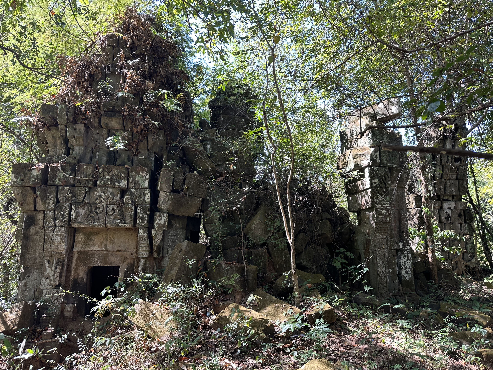
Century: 11th Century
ទីតាំង និងប្រវត្តិ៖ ប្រាសាទអូរក្រូច ស្ថិតនៅក្នុងភូមិសាស្ត្រឃុំកន្ទួត ស្រុកជាំក្សាន្ត ខេត្តព្រះវិហារ។ វាជាបុរាណដ្ឋានសម័យអង្គរដ៏ស្ងប់ស្ងាត់មួយ ដែលសាងសង់ឡើងនៅលើខឿនតែមួយ និងមានតំណភ្ជាប់ស្ថាបត្យកម្មប្រហាក់ប្រហែលនឹងតំបន់ប្រាសាទរងផ្សេងទៀតក្នុងតំបន់។ ស្ថាបត្យកម្ម និងប្លង់៖ ប្រាសាទនេះមានតួប៉មថ្មភក់ចំនួន ៣ ឈរតម្រៀបគ្នាតាមអ័ក្ស និងបែរមុខទៅទิសខាងកើត។ បច្ចុប្បន្ន តួប៉មខាងត្បូងនៅសេសសល់រូបរាងល្អជាងគេ តួប៉មកណ្តាលបានបាក់បែកសល់ត្រឹមជញ្ជាំងខ្លះ ខណៈដែលតួប៉មខាងជើងនៅសល់ជញ្ជាំងម្ខាងទល់ទ្រដោយឯកឯងយ៉ាងចម្លែក។ ភាពពិសេស៖ ផ្នែកខាងក្នុង និងស្នាដៃឆ្លាក់ក្បាច់លើសសរពេជ្រ ផ្ដែ និងផ្តែរទ្វារបង្ហាញឱ្យឃើញពីបច្ចេកទេសសាងសង់ដោយថ្មភក់ដ៏វិចិត្រ ប៉ុន្តែការឆ្លាក់លម្អមួយចំនួនត្រូវបានគេបន្សល់ទុកចោលក្នុងសភាព «មិនទាន់រួចរាល់ជាស្ថាពរ» (Unfinished carving) ដែលផ្តល់ជាតម្រុយដ៏មានតម្លៃពីដំណើរការនៃការដ្ឋានសាងសង់បុរាណស្ថាន។
Location & History: Prasat O Krouch (Aur Krauch) is located in Kantuot Commune, Choam Khsant District, Preah Vihear Province. It is a quiet, heavily overgrown Angkorian-era ruin sharing stylistic ties with the region's other remote temple clusters. Architecture & Layout: The site consists of three sandstone towers built upon a common terrace, all opening toward the east. Today, only the southern tower remains mostly standing, the central tower has largely collapsed, and one freestanding wall of the northern tower stands miraculously isolated without structural support. Unique Features: The site features finely cut sandstone masonry and detailed pilaster decorations. Similar to North Snaeng Krabei, a close examination of the southern tower reveals that the process of decorative stonework and carving was left unfinished, offering researchers a unique window into ancient Khmer construction and artistic workflows.A quiet, secluded ruin surrounded by old trees and nature.
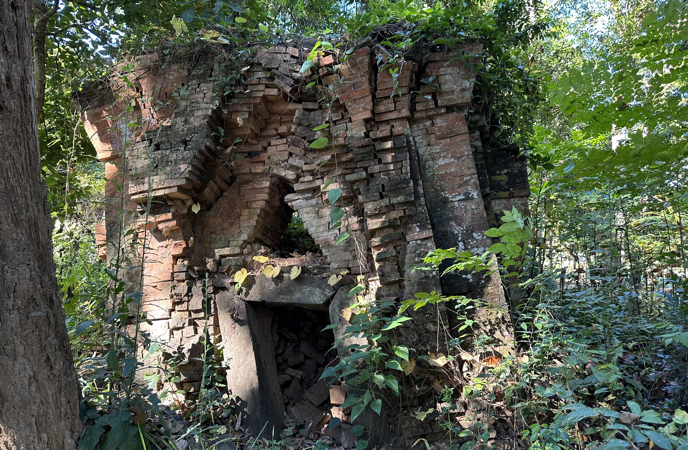
Century: 10th Century
ទីតាំង និងប្រវត្តិ៖ ប្រាសាទត្រាំប្រាល (ឬដែលពេលខ្លះហៅថា ប្រាសាទចេញ) ស្ថិតនៅឃុំទឹកក្រហម ស្រុកជាំក្សាន្ត ខេត្តព្រះវិហារ ស្ថិតនៅជើងភ្នំសាំប៉ាឌូ (Sam Padu)។ បុរាណដ្ឋាននេះត្រូវបានសិក្សាដំបូងដោយអ្នកស្រាវជ្រាវបារាំង Émilien Laya de Lajonquière និង Henri Parmentier。 កាលបរិច្ឆេទសាងសង់៖ ទោះបីជាមិនមានសិលាចារឹកច្បាស់លាស់បញ្ជាក់ពីឆ្នាំសាងសង់ពិតប្រាកដក៏ដោយ ស្ថាបត្យកម្ម និងទម្រង់ប្លង់របស់វាបង្ហាញពីលក្ខណៈនៃសម័យកាលមុនអង្គរទាក់ទងនឹងចុងសម័យកាលរចនាបទប្រហាក់ប្រហែលនឹងរជ្ជកាលព្រះបាទជ័យវរ្ម័នទី៥。 ស្ថាបត្យកម្ម និងប្លង់៖ ប្រាសាទនេះមានការរៀបចំព័ទ្ធដោយថែវ ឬកំពែពីរជាន់។ បរិវេណខាងក្នុងមានតួប៉មឥដ្ឋចំនួន ៣ ឈរលើខឿនថ្មបាយក្រៀមតែមួយ ដោយមានតួប៉មកណ្តាលធំជាងគេ និងមានបុស្បុក ឬថែវមុខមុនចូល។ អ្វីដែលគួរឱ្យចាប់អារម្មណ៍គឺ ប៉មខាងត្បូងនៅសល់សភាពដុំដំល្អជាងគេ ដោយមានឆ្លាក់ក្បាច់ផ្ដែ ទ្វារបញ្ឆោត និងសសរពេជ្រធ្វើពីថ្មភក់យ៉ាងប្រណិត៕Location & History: Prasat Tram Preal (also known as Prasat Chenh) is located in Tuek Kraham Commune, Choam Khsant District, Preah Vihear Province, near the base of Phnom Sam Padu. It was originally documented by early French explorers like L. de Lajonquière. Construction Date: While exact epigraphic dates are scarce, its architectural layout and extended-plan system link it stylistically to the late 10th-century framework (around the era of King Jayavarman V). Architecture & Layout: The temple features a double-enclosure layout built with a mix of brick and laterite. The main sanctuary houses three brick towers on a common laterite platform, facing east. The southern tower is notably the best preserved, featuring intact brick pilasters, false doors, and a distinct sandstone lintel/pediment structure, alongside rare surviving architectural elements like round stone pedestals and fallen crown decorative pieces.
An ancient temple site holding deep historical remnants.
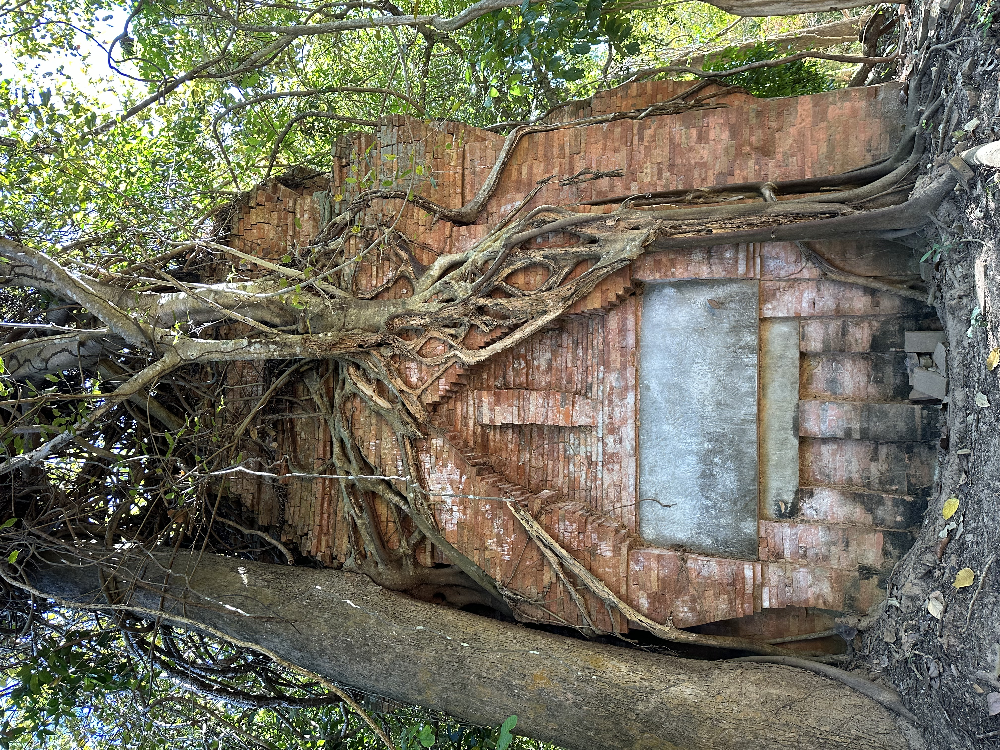
Century: 10th Century
ទីតាំង និងប្រវត្តិ៖ ប្រាសាទលោមនាង (ដែលគេស្គាល់ទូទៅក្នុងបញ្ជីបុរាណវិទ្យាថា ប្រាសាទត្រពាំងគោល) ស្ថិតនៅឃុំទឹកក្រហម ស្រុកជាំក្សាន្ត ខេត្តព្រះវិហារ。 ប្រាសាទនេះត្រូវបានកត់ត្រាទុកក្នុងបញ្ជីស្រាវជ្រាវរបស់បារាំងដោយ É. Lunet de Lajonquière (ឆ្នាំ១៩០៧) និង Henri Parmentier (ឆ្នាំ១៩១៣)。 ស្ថាបត្យកម្ម និងប្លង់៖ ប្រាសាទនេះមានរចនាសម្ព័ន្ធល្អប្រសើរគួរឱ្យកត់សម្គាល់ ដោយវាស្ថិតនៅចំកណ្តាលព័ទ្ធជុំវិញដោយកំពែថ្មបាយក្រៀមពីរជាន់。 បរិវេណខាងក្នុងមានតួប៉មឥដ្ឋទោលដ៏ខ្ពស់សាងសង់បែរមុខទៅខាងទิសកើត មានទ្វារបញ្ឆោតសងខាង និងមានរចនាសម្ព័ន្ធបណ្ណាល័យថ្មភក់នៅខាងទិងអាគ្នេយ៍。 ភាពពិសេស៖ ផ្ដែ និងសសរពេជ្រធ្វើពីថ្មភក់របស់ប្រាសាទនេះបង្ហាញពីក្បាច់រចនាដ៏ប្រណិត ប៉ុន្តែមិនទាន់ត្រូវបានឆ្លាក់បញ្ចប់សព្វគ្រប់ជាស្ថាពរនោះទេ (Unfinished carvings) ដែលជាលក្ខណៈពិសេសស្រដៀងគ្នាទៅនឹងប្រាសាទផ្សេងទៀតក្នុងតំបន់ជាំក្សាន្ត។
Location & History: Prasat Lom Neang (commonly known in archaeological records as Prasat Trapeang Kol) is located in Tuek Kraham Commune, Choam Khsant District, Preah Vihear Province. It was documented early on by French researchers like Lunet de Lajonquière and Henri Parmentier. Architecture & Layout: This site is noted for being in a relatively well-preserved state. It features a double enclosure wall made of laterite. Inside stands a tall, elegant single brick sanctuary facing east with decorative false doors, accompanied by a sandstone library structure positioned to the southeast. Unique Features: The sandstone lintels and false doors showcase fine lines, but similar to several other remote temples in the district (like North Snaeng Krabei and O Krouch), elements of the decorative carving work were left unfinished, offering researchers valuable insight into ancient construction workflows.
Characterized by beautiful brickwork intertwined with large tree roots.
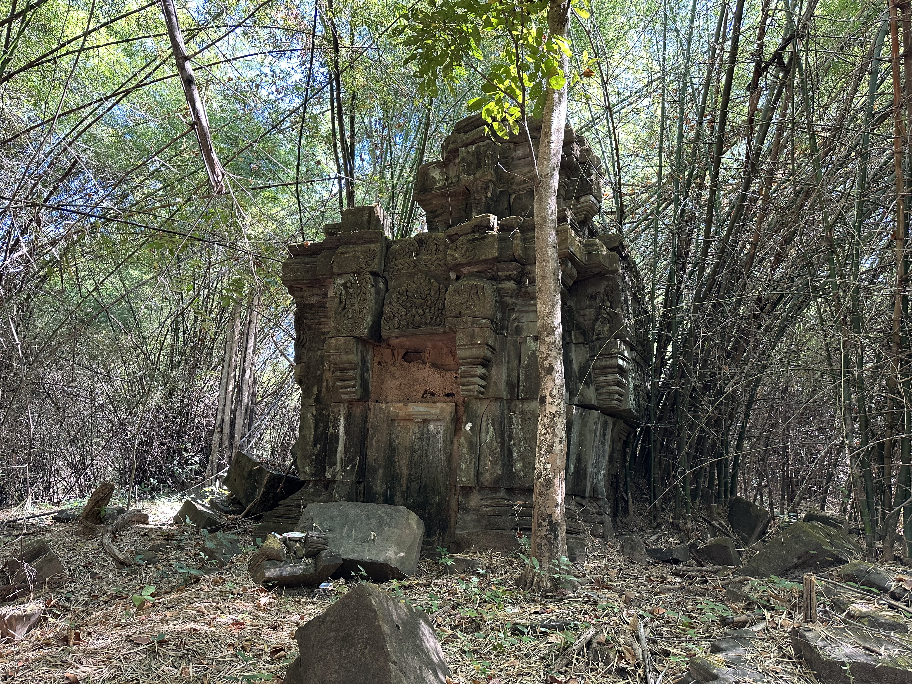
Century: 11th Century
ទីតាំង និងប្រវត្តិ៖ ប្រាសាទចៅកំបុណ្យ ស្ថិតនៅក្នុងភូមិត្រពាំងធំ ឃុំជាំក្សាន្ត ស្រុកជាំក្សាន្ត ខេត្តព្រះវិហារ។ បុរាណដ្ឋាននេះត្រូវបានកត់ត្រាទុកក្នុងបញ្ជីសារពើភណ្ឌបុរាណវិទ្យា (Inventory) ក្រោមលេខសម្គាល់ IK 292 និង CISARK 604។ ស្ថាបត្យកម្ម និងប្លង់៖ ប្រាសាទនេះគឺជាសំណង់ទោល ឬប៉មតូចរាងការ៉េធ្វើពីថ្មភក់ ដែលបច្ចុប្បន្នស្ថិតក្នុងស្ថានភាពសេសសល់ជារូបរាងបាក់បែកខ្លះ (Partially standing small square sandstone temple)។ សារៈសំខាន់៖ ទោះបីជាវាជាប្រាសាទខ្នាតតូចក៏ដោយ ប៉ុន្តែវត្តមានរបស់វាជួយបន្ថែមរូបភាពច្បាស់លាស់អំពីបណ្តាញសាសនដ្ឋាន និងស្ថាបត្យកម្មរងដែលរាយប៉ាយនៅទូទាំងស្រុកជាំក្សាន្ត ខេត្តព្រះវិហារ។
Location & History: Prasat Chau Kombon (frequently noted locally as Chau Kom Mon) is located in Trâpeang Thom Village, Choam Khsant Commune, Choam Khsant District, Preah Vihear Province. It is cataloged in official archaeological surveys under reference IDs such as IK 292 and CISARK 604. Architecture & Layout: The site consists of a small, partially standing single-room square sanctuary constructed of sandstone. Significance: Though modest in size compared to massive mountain complexes, it serves as another important piece of the puzzle mapping out the dense distribution of smaller architectural shrines across the Choam Khsant region.
A secluded sanctuary site tucked away in forest canopies.

Century: 12th Century
ទីតាំង និងប្រវត្តិ៖ ប្រាសាទពណ្ណរាយ ប្រាសាទពណ្ណរាយ កសាងអំពីប្លែកក់ សាងសង់ជាកាកបាទ មានលក្ខណៈដូចជាសំណង់ស្រះស្រង់ ដែលគេយកថ្មភក់ មករៀបមានលក្ខណៈដូចជាកាំជណ្តើរទៅតាមខ្នងបារាណ៍ផ្នែកខាងលិច។ បារាណ៍មានរាងចតុកោណកែងមានទទឹងទំហំប្រមាណ ២០០ម៉ែត្រ និងបណ្តោយ ១គីឡូម៉ែត្រ ស្ថិតជ្រុងឥសាន្តនៃប្រាសាទខ្នារប្រមាណ ៥០ម៉ែត្រ。 នៅទីតាំងប្រាសាទមានបំណែករូបចម្លាក់មួយចំនួនដូចជា បំណែករូបព្រះពุទ្ធប្រក់នាគបាក់បែក មានកំស់ ១៩០សង់ទីម៉ែត្រ ទទឹង ១១៥សង់ទីម៉ែត្រ បាត់ចាប់ពីព្រះកេសឡើងទៅលើ និងបែកផ្នែកខាងមុខរូបៗ。 បំណែកដែចម្លាក់ ដែលរូបនេះប្រហែលមានទំហំ បំណែកចម្លាក់ផ្នែកខាងក្រោម បំណែកចម្លាក់មនុស្សគមខ្នង មានប្រទះឃើញនៅប្រាសាទបាយ័នផងដែរ。 ភស្តុតាងនេះអាចបង្ហាញថាមានការគោរពព្រះពុទ្ធសាសនាផងដែរ៕
Prasat Punnareay is constructed from laterite, built in a cross shape, with characteristics like a pond-like structure where sandstone is arranged like stairs leading into the western baray side. The baray is rectangular, measuring about 200 meters wide and 1 kilometer long, located near the area of the sandstone temple by about 50 meters. At the temple site, there are some sculpture fragments such as a broken Buddha image fragment measuring 190 cm in height and 115 cm in width, missing from the head upward and broken at the front. The carved fragments, which probably have dimensions including lower carving fragments and back-figure carving fragments, are also found at the Bayon Temple. This evidence may indicate the worship of Buddhism as well.
An architectural structure built during the peak empire era.

Century: 10th-11th Century
ទីតាំង និងប្រវត្តិ៖ ប្រាសាទខ្នារ ស្ថិតនៅក្នុងភូមិក្រឡភេសន៏ ឃុំព្រៃធំ ស្រុកជាំក្សាន្ត ខេត្តព្រះវិហារ។ ប្រាសាទនេះមានប្រវត្តិសាស្ត្រទាក់ទងយ៉ាងសំខាន់ជាមួយអត្ថបទសិលាចារឹកបុរាណ និងជាទីតាំងដែលរំលឹកដល់ព្រាហ្មណ៍ហិរណ្យទាម (Hiraṇyadama) ដែលជាព្រាហ្មណ៍បុរាណធ្វើពិធីរាជាភិសេកថ្វាយព្រះបាទជ័យវរ្ម័នទី២ ជាស្តេចចក្រវាលនៅលើភ្នំគូលែន។ កាលបរិច្ឆេទសាងសង់៖ ប្រាសាទនេះត្រូវបានសាងសង់ឡើងតាំងពី សតវត្សរ៍ទី១០ និងមានការកសាងពង្រីកបន្ថែមក្នុង សតវត្សរ៍ទី១១ ព្រមទាំងមានសិលាចារឹកសំខាន់ៗជាច្រើនដូចជា សិលាចារឹក K.356 (ឆ្នាំ៩០២ នៃគ.ស.) និង K.661។ ស្ថាបត្យកម្ម និងប្លង់៖ បរិវេណប្រាសាទមានកំផែងថ្មបាយក្រៀមពីរជាន់ព័ទ្ធជុំវិញ មានតួប៉មឥដ្ឋ និងថ្មភក់ជាច្រើន រួមទាំងសំណង់រាងអក្សរ U នៅភាគខាងជើងដែលអ្នកជំនាញចាត់ទុកថាជាប្រភេទព្រះរាជដំណាក់ ឬអាស្រម (Virashama) ព្រមទាំងមានបណ្ណាល័យឥដ្ឋនៅជ្រុងអាគ្នេយ៍ដែលមានអាយុកាលចំណាស់ និងស្រស់ស្អាត។
Location & History: Prasat Khnar is located near Krala Peas Village in Choam Khsant District, Preah Vihear Province. It is an exceptionally important historical site associated epigraphically with Hiraṇyadama, the revered Brahmin priest who ordained King Jayavarman II as universal monarch during the foundational ceremonies of the Angkorian era. Construction Timeline: The complex dates primarily to the 10th century, with significant additions and patronage continuing through the 11th century. It preserves several vital historical steles and inscriptions, including K.356 (dating to 902 AD) and K.661. Architecture & Layout: The expansive site features double laterite enclosure walls, central brick and sandstone temple sanctuaries, intricate lintels depicting deities, an iconic southeastern library building reminiscent of the Roluos group, and a unique U-shaped structure to the north often classified by researchers as an ancient palace or ashram.
Features intricate lintels and historical stone carvings.
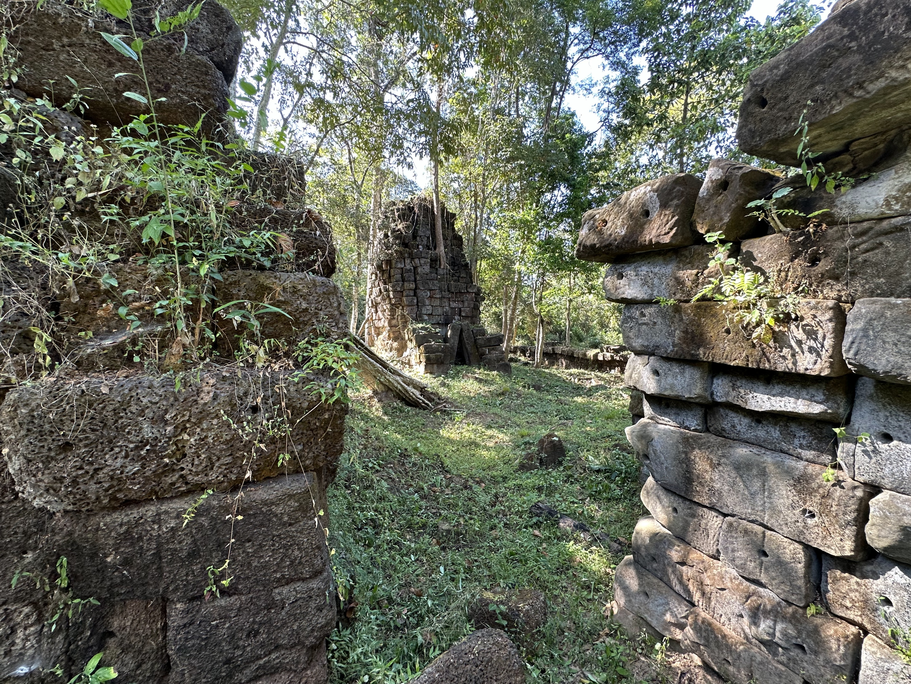
Century: 12th Century
ទីតាំង និងប្រវត្តិ៖ ប្រាសាទចែងមេង ស្ថិតនៅក្នុងភូមិក្រឡភេសន៍ ឃុំព្រីងធំ ស្រុកជាំក្សាន្ត ខេត្តព្រះវិហារ។ បុរាណដ្ឋាននេះត្រូវបានកត់ត្រាទុកក្នុងប្រវត្តិសាស្ត្រ និងបញ្ជីសារពើភណ្ឌបារាំងយូរមកហើយ (ដូចជាការកត់ត្រាដោយ ឯម៉ូនីយេ (E. Aymonier) និង លូណេ ដឺ ላចុងគីែរ (E. Lunet de Lajonquière))។ រចនាប័ទ្ម និងកាលបរិច្ឆេទ៖ ប្រាសាទនេះត្រូវបានកសាងឡើងក្នុង សតវត្សរ៍ទី១២ ដោយមានប្លង់ស្ថាបត្យកម្ម និងលក្ខណៈទម្រង់ប្រហាក់ប្រហែលទៅនឹង មន្ទីរពេទ្យសាសនា ឬអារ្យសាលា (Arogyasala / Hospital Chapel) សាងឡើងក្នុងរជ្ជកាលព្រះបាទជ័យវរ្ម័នទី៧។ ស្ថាបត្យកម្ម និងប្លង់៖ ប្រាសាទនេះផ្សំឡើងពីថ្មបាយក្រៀម ដែលមានតួប៉មកណ្តាលរាងការ៉ូ អមដោយសាលមុខ (Mandapa) និងស៊ុមទ្វារធ្វើពីថ្មភក់។ ព័ទ្ធជុំវិញដោយកំផែងថ្មបាយក្រៀម មានខ្លោងទ្វារចូល (Gopura) ធំនៅខាងកើត ដែលបច្ចុប្បន្នត្រូវបានរុំព័ទ្ធ និងដុះគ្របដណ្តប់ដោយឫសឈើធំៗយ៉ាងស្រស់ស្អាត និងរំលេចដោយបំណែកបណ្ណាល័យនៅជ្រុងអាគ្នេយ៍។
Location & History: Prasat Chaeng Meng is located in Krâlapeas Village, Pring Thum Commune, Choam Khsant District, Preah Vihear Province. It is a well-documented site featured in early French archaeological inventories by explorers like Étienne Aymonier and Lunet de Lajonquière. Style & Date: Dating back to the 12th century, the structural layout and architectural cues strongly associate it with the network of hospital chapels (Arogyasala) built across the empire during the reign of King Jayavarman VII. Architecture & Layout: Built primarily from laterite, the complex features a central square sanctuary tower connected to a short eastern entrance hall (mandapa) with fine sandstone doorframes. It includes the remains of a southeastern library building and is enclosed by a laterite wall featuring an eastern gopura entrance that is famously and dramatically overtaken by large tree roots.
A historic ruin exhibiting laterite blocks and classic styling.
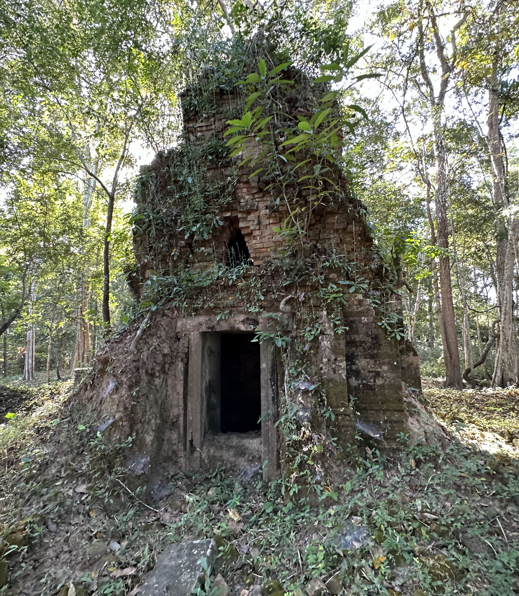
Century: 7th Century (Chenla Period)
ទីតាំង និងប្រវត្តិ៖ ប្រាសាទកំភើម (ឬដែលអ្នកស្រាវជ្រាវបារាំងពីមុនហៅថា ប្រាសាទកំពង់) ស្ថិតនៅក្នុងភូមិរឡភេសន៍ ឃុំព្រីងធំ ស្រុកជាំក្សាន្ត ខេត្តព្រះវិហារ។ វាមានទីតាំងស្ថិតនៅភាគខាងត្បូងមិនឆ្ងាយប៉ុន្មានពីប្រាសាទខ្នារ។ កាលបរិច្ឆេទសាងសង់៖ ប្រាសាទនេះមានភាពល្បីល្បាញដោយសារការរកឃើញសិលាចារឹក (ចុះបញ្ជីលេខ K. 357) នៅលើមេទ្វារ ដែលត្រូវបានអ្នកជំនាញសន្និដ្ឋានថាមានអាយុកាលតាំងពី សតវត្សរ៍ទី៧ (សម័យមុនអង្គរ)។ សិលាចារឹកនេះមាន ២៣ បន្ទាត់ និយាយពីអ្នកបម្រើ និងដង្វាយដល់ប្រាសាទ។ ទោះជាយ៉ាងណា ទម្រង់តួប៉មឥដ្ឋដែលឈរបច្ចុប្បន្នអាចត្រូវបានកសាងឬជួសជុលឡើងវិញនៅសតវត្សរ៍ទី៩ ឬទី១០។ ស្ថាបត្យកម្ម និងប្លង់៖ ដើមឡើយប្រាសាទនេះមានតួប៉មឥដ្ឋចំនួន ៣ ប៉ុន្តែបច្ចុប្បន្ននៅសល់តែតួប៉មកណ្តាលមួយប៉ុណ្ណោះដែលនៅឈរ។ វាជាប៉មរាងការ៉េ បែរមុខទៅទិសខាងកើត និងមានទ្វារបញ្ឆោតធ្វើពីឥដ្ឋនៅជ្រុងផ្សេងទៀត។ លក្ខណៈពិសេសរួមមាន ផ្តែរទ្វារឆ្លាក់រូបព្រះវិស្ណុគង់លើសត្វគ្រុឌយ៉ាងស្រស់ស្អាត ទងទឹក (សោមសូត្រ) និងបំណែកទម្រលិង្គដែលបន្សល់ទុកតាំងពីសម័យបុរាណ។
Location & History: Prasat Kamphoeum (historically recorded by early French archaeologists as Prasat Kompong) is located just south of Krala Peas Village, Pring Thum Commune, Choam Khsant District, Preah Vihear Province. It belongs to the same dense archaeological zone as Prasat Khnar. Construction Date: The site is heavily associated with the 7th-century (Pre-Angkorian) period, largely due to a 23-line Khmer text inscription on the eastern doorjamb registered as K. 357. The text details workers and offerings given to the temple. However, because the standing brick architecture resembles 9th or 10th-century styles, experts believe the older 7th-century doorway pieces may have been recycled during a later reconstruction. Architecture & Layout: Originally comprising a group of three brick temples enclosed by a moat, only the central square brick sanctuary remains standing today. It opens to the east with false doors on its other three sides. Key features include a decorative sandstone lintel depicting Vishnu on Garuda, intricately carved column capitals, and remnants of a somasutra (water spout) and linga pedestal scattered nearby.
An ancient pre-Angkorian ruin dating back to the Chenla era.
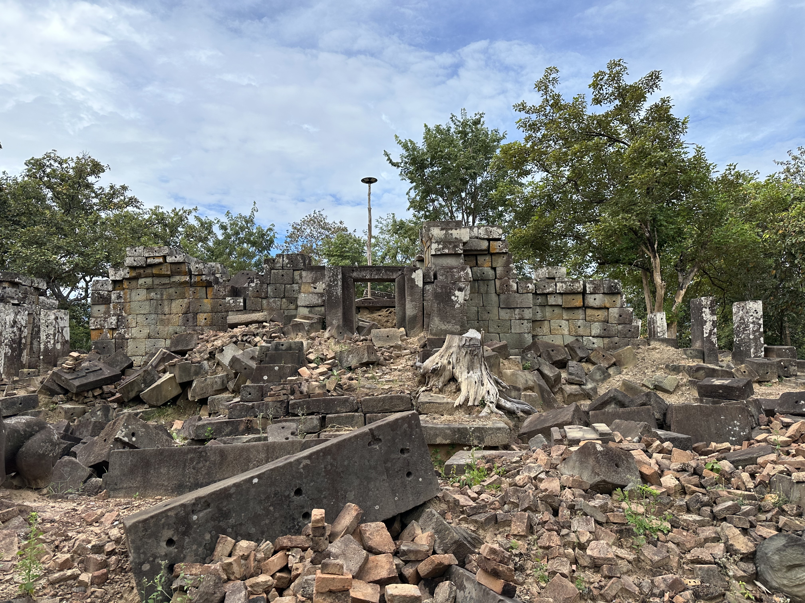
Century: 12th Century
A remarkable site with collapsed structures and stone terraces.
Century: 1០th Century
ទីតាំង និងប្រវត្តិ៖ ប្រាសាទក្រពុំឈូក ស្ថិតនៅក្នុងស្រុកឆែប ខេត្តព្រះវិហារ។ ប្រាសាទនេះគឺជាបុរាណដ្ឋានសម័យអង្គរដ៏មានតម្លៃមួយ ដែលត្រូវបានសាងសង់ឡើងក្នុងអំឡុងសតវត្សរ៍ទី១០ (ប្រហែលចុងសតវត្សរ៍ទី១០ ក្នុងរជ្ជកាលព្រះបាទជ័យវរ្ម័នទី៥)។ ស្ថាបត្យកម្ម និងប្លង់៖ បុរាណដ្ឋាននេះលេចធ្លោដោយសារការប្រើប្រាស់ថ្មភក់ និងឥដ្ឋយ៉ាងប្រណិត។ វាមានតួប៉មប្រាសាទចំនួន ៥ ឈរលើខឿនថ្មបាយក្រៀមតែមួយ (រចនាប័ទ្មស្រដៀងនឹងប្រាសាទបន្ទាយស្រី ឬប្រាសាទភ្នំជីហូរ) ដែលមានប៉ម中央ធំជាងគេ និងប៉មរងចំនួនបួននៅតាមជ្រុង។ ភាពពិសេស និងសិល្បៈ៖ ប្រាសាទក្រពុំឈូកមានឈ្មោះល្បីល្បាញដោយសារស្នាដៃឆ្លាក់ក្បាច់ក្របខណ្ឌទ្វារ ផ្ដែ និងរូបចម្លាក់ទេវស្ថានធ្វើពីថ្មភក់ដ៏វិចិត្របំផុត ដែលឆ្លុះបញ្ចាំងពីសិល្បៈរចនាប័ទ្មបាខែង-កែវ និងបន្ទាយស្រី។Location & History: Prasat Krapum Chhouk (often referred to as the "Lotus Bud Temple") is located in Chhaeb District, Preah Vihear Province. It is a magnificent 10th-century Angkorian-era architectural site, dating roughly to the late 10th century during the reign of King Jayavarman V. Architecture & Layout: The complex is renowned for its refined use of fine-grained sandstone. It features a group of five towers built on a single raised platform (sharing stylistic design concepts with temples like Banteay Srei), with a prominent central sanctuary flanked by four smaller corner towers. Unique Features & Art: Prasat Krapum Chhouk is celebrated by art historians for its exceptionally well-preserved and intricate sandstone carvings, lintels, and deity figures, which showcase the delicate sculptural mastery of the transition between the Bakheng-Khleang and Banteay Srei artistic styles.
A late-period architectural monument representing post-Angkor transition.
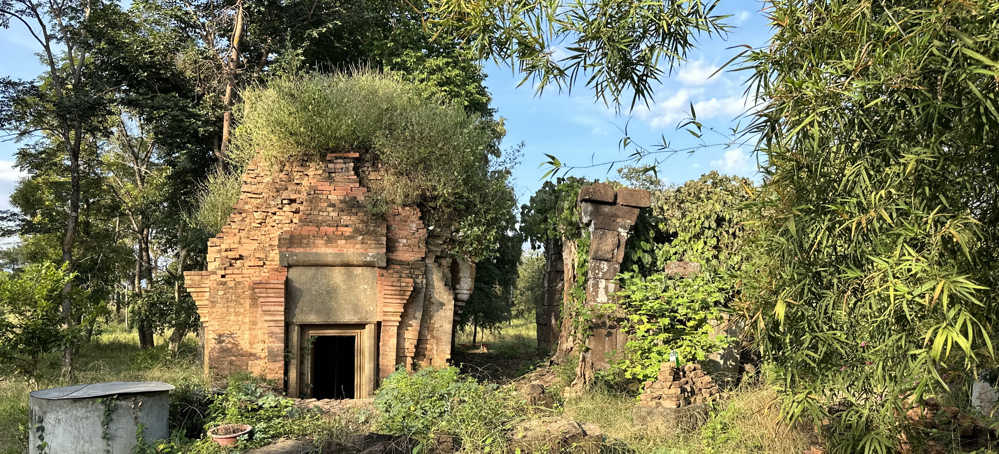
Century: 11th Century
ទីតាំង និងប្រវត្តិ៖ ប្រាសាទខ្នារផ្ទោល ស្ថិតនៅក្នុងភូមិខ្នារផ្ទោល ឃុំស្រែណូយ ស្រុកវ៉ារិន ខេត្តសៀមរាប។ បុរាណដ្ឋាននេះត្រូវបានដាក់បញ្ចូលក្នុងគម្រោងជួសជុល និងអភិរក្សបន្ទាន់ដោយ អាជ្ញាធរជាតិអប្សរា ដើម្បីការពារពីការទ្រុឌទ្រោម។ ស្ថាបត្យកម្ម និងប្លង់៖ ប្រាសាទនេះផ្សំឡើងពីសំណង់ឥដ្ឋ និងថ្មបាយក្រៀម ដោយដើមឡើយមានតួប៉មចំនួនបី ប៉ុន្តែបច្ចុប្បន្ននៅសល់តួប៉មកណ្តាលធ្វើពីឥដ្ឋ និងតួប៉មខាងជើងធ្វើពីថ្មបាយក្រៀម (ខណៈតួប៉មខាងត្បូងបានបាក់បែកសាបបសូន្យហើយ)។ តួប៉មទាំងនោះបែរមុខទៅទิសកើត ដោយតួប៉មឥដ្ឋមានរៀបចំទ្វារបញ្ឆោតអមសងខាងយ៉ាងប្រណិត។ រចនាសម្ព័ន្ធរង៖ នៅខាងមុខតួប៉ម មានអាគារបណ្ណាល័យធ្វើពីថ្មបាយក្រៀមមួយបែរមុខទៅទិសលិច ដែលមានរន្ធបង្អួចខ្យល់កាត់ទទឹងផ្ដេកយ៉ាងប្លែកភ្នែក ព្រមទាំងមានគូទឹកព័ទ្ធជុំវិញ និងស្រះទឹកធំនៅផ្នែកខាងជើង។
Location & History: Prasat Khnar Phtol is located in Khnar Phtol Village, Srae Nouy Commune, Varin District, Siem Reap Province. Due to its remote nature and structural aging, it has been the subject of recent emergency stabilization and restoration efforts by the APSARA National Authority. Architecture & Layout: The temple complex originally consisted of three sanctuaries, of which two principal towers remain: a central brick tower and a northern laterite tower (while the southern tower has completely vanished). Both existing towers open toward the east, and the central brick tower features intricately detailed brick-crafted false doors on its other sides. Associated Features: Fronting the towers is a laterite library building opening westward, notable for its upper-level horizontal slit windows. The site is also defined by an encompassing moat and a large ancient water basin situated to the north.
The final majestic site in our catalog, showcasing classic 11th-century temple design.
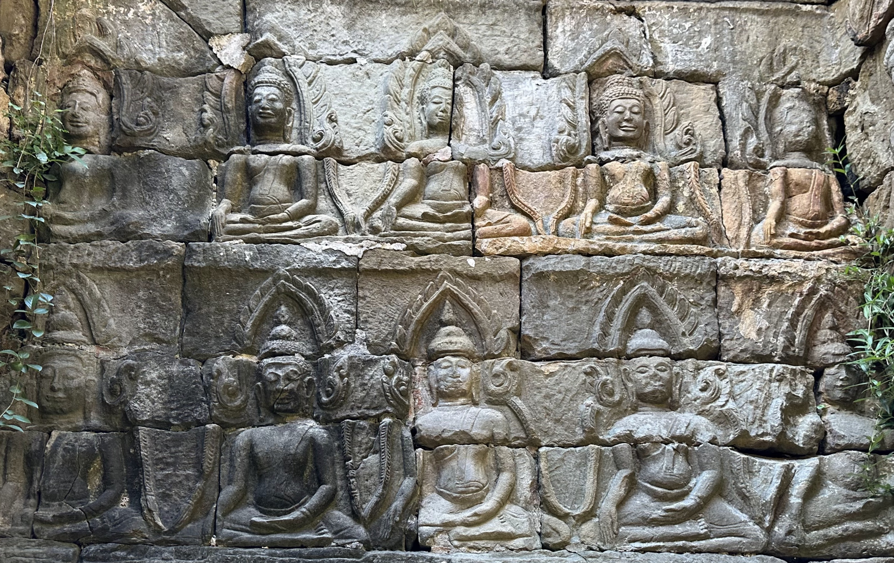
Description: Ancient Wall Carvings
A stunning ancient wall featuring rows of intricate seated figures carved directly into the sandstone blocks.